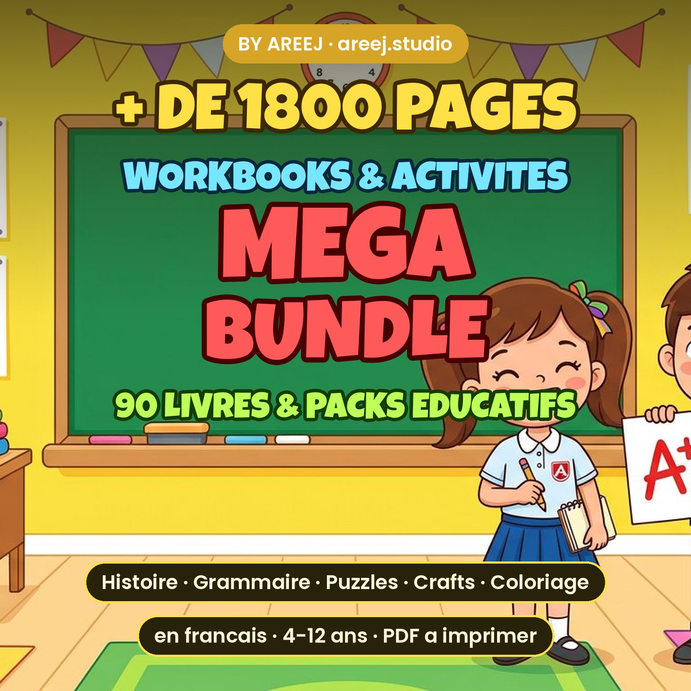
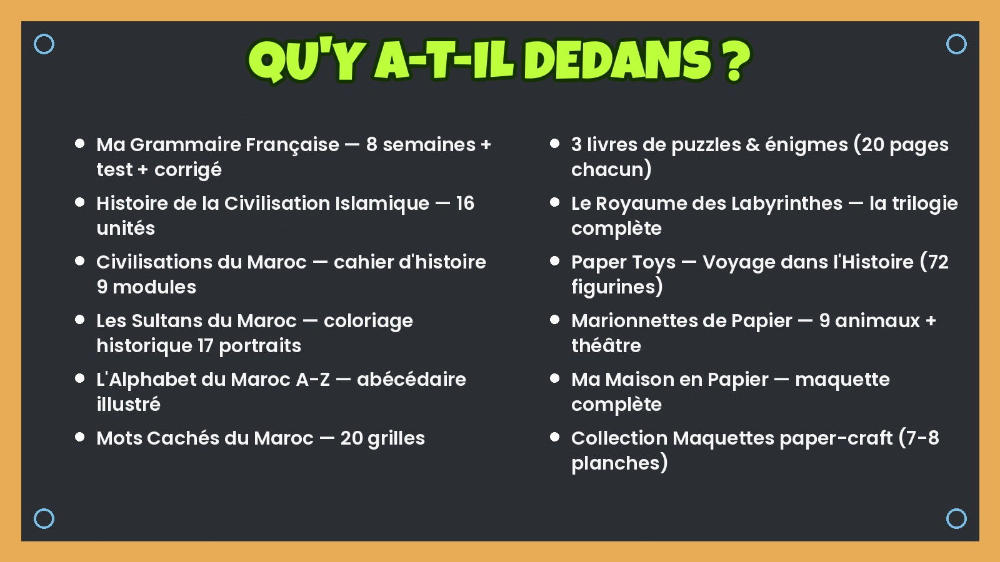
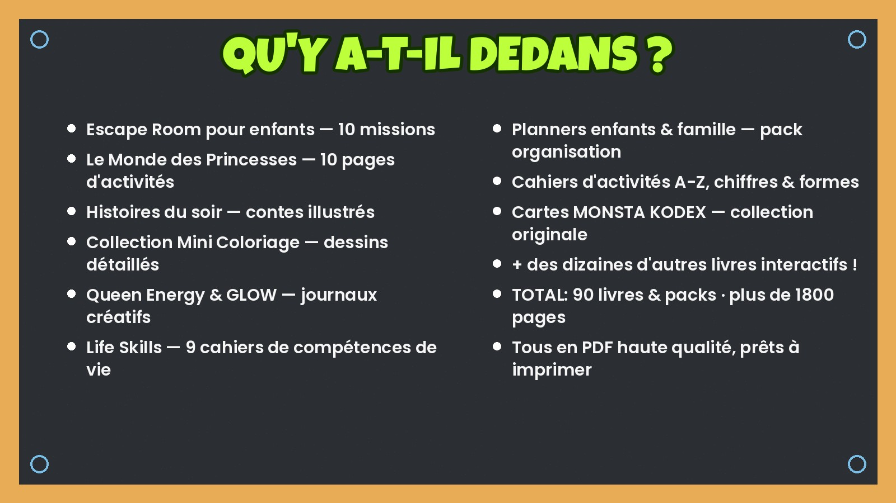

📋 LISTINGS JAHZIN — COPY & PASTE
10 listings: 9 books Life Skills + 1 MEGA BUNDLE · Les PDFs f portfolio/downloads/ · Les covers f portfolio/heroes/img/
⚠️ Kifach tst3mli had le fichier: l kol book — copy le TITLE kif ma howa, copy les 13 TAGS wahed b wahed, copy la DESCRIPTION kamla. Files li t-uploadi: book-NN-digital.pdf + book-NN-print.pdf. Photo principale: bNN.jpg.
😴 Book 55 — Bien Dormir · $3.99
Files: book-55-digital.pdf + book-55-print.pdf · Photo: b55.jpg
TITLE:
Sleep Workbook for Kids, Bedtime Routine Printable, Calm Night Activity Book, Kids Sleep Tracker, Anxiety Relief Bedtime, Instant Download PDF
13 TAGS:
kids sleep workbook · bedtime routine kids · sleep tracker kids · calm bedtime printable · kids anxiety relief · breathing exercises · printable for kids · digital download pdf · parenting tools · kids wellness · therapy worksheets · school counselor · homeschool printable
DESCRIPTION:
🌙 SLEEP WELL WORKBOOK FOR KIDS — Instant Digital Download
Help your child build a peaceful bedtime routine! This beautifully illustrated 10-page workbook teaches kids why sleep matters, how to catch their "sleep thieves", build a calming evening routine, try the 4-7-8 breathing technique, and track 7 nights of better sleep — ending with a certificate of achievement! 🏆
✨ WHAT'S INSIDE
• Why sleep is a superpower
• My sleep thieves checklist
• My perfect evening routine builder
• Dream bedroom checklist
• 7-night sleep tracker
• Worry dump before bed
• 4-7-8 calm breathing guide
• Certificate of completion
📦 YOU RECEIVE 2 PDF FILES
• Digital version (tablet / GoodNotes friendly)
• Print version (A4-ready, high quality borders)
⚡ INSTANT DOWNLOAD — no physical item shipped.
Personal use only. © BY AREEJ · areej.studio
🧰 Book 56 — Ma Boîte à Outils · $3.99
Files: book-56-digital.pdf + book-56-print.pdf · Photo: b56.jpg
TITLE:
Coping Skills Toolbox for Kids, Emotional Regulation Workbook, Feelings Printable, Calm Down Strategies, Therapy Tool, Instant Download PDF
13 TAGS:
coping skills kids · calm down corner · emotional regulation · feelings workbook · kids therapy tools · calming strategies · sel worksheets · counselor resource · kids mental health · printable workbook · mindfulness kids · big emotions kids · digital download
DESCRIPTION:
🧰 MY COPING SKILLS TOOLBOX — Instant Digital Download
A warm, kid-friendly 10-page workbook that gives children real tools for big feelings: tools for the body, tools for the heart, tools for the mind — plus a feelings check-in, a mood tracker and a personal TOP 5 toolbox page. Ends with a certificate! 🏆
✨ WHAT'S INSIDE
• What is a coping tool?
• Tools for my body / my heart / my mind
• When sadness visits
• Feelings check-in page
• My mood tracker
• My TOP 5 tools
• Certificate of completion
📦 YOU RECEIVE 2 PDF FILES — digital + print versions.
⚡ INSTANT DOWNLOAD — no physical item shipped.
Personal use only. © BY AREEJ · areej.studio
⏰ Book 57 — Le Temps des Soucis · $3.99
Files: book-57-digital.pdf + book-57-print.pdf · Photo: b57.jpg
TITLE:
Worry Time Workbook for Kids, Anxiety Relief Printable, Worry Journal Kids, CBT Activity Book, Calm Kids Tool, Instant Download PDF
13 TAGS:
worry workbook kids · kids anxiety help · worry journal · cbt for kids · anxious kids tool · worry time · kids mental health · calming printable · counselor resource · therapy worksheets · mindfulness kids · school psychologist · digital download
DESCRIPTION:
⏰ WORRY TIME WORKBOOK — Instant Digital Download
Teach kids to tame their worries! This gentle 10-page workbook helps children understand what a worry is, sort real problems from "what ifs", schedule a daily "worry appointment", grow their worry tree and build a personal calm-down plan. Certificate included! 🏆
✨ WHAT'S INSIDE
• What is a worry?
• Real worry vs "what if" sorting
• My 5-step worry plan
• My daily worry appointment
• Worry notebook pages
• My worry tree
• My action plan + worry garden
• Certificate of completion
📦 2 PDF FILES — digital + print. ⚡ INSTANT DOWNLOAD.
Personal use only. © BY AREEJ · areej.studio
🌱 Book 58 — Esprit qui Grandit · $3.99
Files: book-58-digital.pdf + book-58-print.pdf · Photo: b58.jpg
TITLE:
Growth Mindset Workbook for Kids, Positive Thinking Printable, The Power of Yet, Confidence Activity Book, SEL Resource, Instant Download
13 TAGS:
growth mindset kids · power of yet · positive thinking · kids confidence · sel worksheets · mindset workbook · classroom resource · homeschool printable · kids motivation · teacher resource · resilience kids · brain learning kids · digital download
DESCRIPTION:
🌱 GROWTH MINDSET WORKBOOK — Instant Digital Download
Turn "I can't" into "I can't YET"! A beautiful botanical-themed 10-page workbook: fixed vs growth mindset, the magic of YET, replacing negative phrases, why mistakes help us grow, a mindset challenge and role models — then a before/after reflection and certificate. 🏆
✨ WHAT'S INSIDE
• Fixed vs growth mindset
• The power of "NOT YET"
• Replace the phrase game
• Mistakes that make us grow
• My mindset challenge
• My learning path + role models
• Before / now reflection
• Certificate of completion
📦 2 PDF FILES — digital + print. ⚡ INSTANT DOWNLOAD.
Personal use only. © BY AREEJ · areej.studio
🛡️ Book 59 — Mes Limites · $3.99
Files: book-59-digital.pdf + book-59-print.pdf · Photo: b59.jpg
TITLE:
Healthy Boundaries Workbook for Kids, Saying No Printable, Self Respect Activity Book, Social Skills Kids, Counselor Tool, Instant Download
13 TAGS:
boundaries for kids · saying no kids · social skills kids · self respect kids · assertiveness kids · kids confidence · sel printable · counselor resource · friendship skills · body safety kids · therapy worksheets · parenting tools · digital download
DESCRIPTION:
🛡️ MY BOUNDARIES WORKBOOK — Instant Digital Download
Empower kids to say NO kindly and protect their space! 10 gorgeous pages: what boundaries are, the 4 types, alarm signals when a line is crossed, kind ways to say no, respecting others' limits, real-life scenarios and a personal "shield phrase". Certificate included! 🏆
✨ WHAT'S INSIDE
• What is a boundary?
• 4 types of boundaries
• My alarm signals
• Saying NO kindly
• My own boundaries map
• Respecting others too
• Practice scenarios + shield phrase
• Certificate of completion
📦 2 PDF FILES — digital + print. ⚡ INSTANT DOWNLOAD.
Personal use only. © BY AREEJ · areej.studio
🧸 Book 60 — Manipulation Émotionnelle · $4.49
Files: book-60-digital.pdf + book-60-print.pdf · Photo: b60.jpg
TITLE:
Emotional Safety Workbook for Kids, Spot Manipulation Printable, Healthy Friendships Activity Book, Red Flags Kids, Instant Download PDF
13 TAGS:
healthy friendships · red flags kids · emotional safety · kids empowerment · friendship skills · social skills kids · counselor resource · bullying prevention · kids self esteem · trusted adults · therapy worksheets · parenting resource · digital download
DESCRIPTION:
🧸 EMOTIONAL SAFETY WORKBOOK — Instant Digital Download
A gentle but powerful 10-page workbook that teaches kids to recognize emotional manipulation: common tactics, warning feelings, true friend vs red flags, their personal rights, "shield" responses, a trust team page and a fun quiz. Certificate included! 🏆
✨ WHAT'S INSIDE
• What is manipulation?
• Tactics to recognize
• My warning signals
• True friend vs red flags
• My rights list
• My shield phrases
• My trust team + quiz
• Certificate of completion
📦 2 PDF FILES — digital + print. ⚡ INSTANT DOWNLOAD.
Personal use only. © BY AREEJ · areej.studio
📱 Book 61 — Accro aux Écrans · $4.49
Files: book-61-digital.pdf + book-61-print.pdf · Photo: b61.jpg
TITLE:
Screen Time Workbook for Kids and Teens, Digital Detox Printable, Phone Addiction Help, Family Screen Challenge, Instant Download PDF
13 TAGS:
screen time kids · digital detox · phone addiction · screen free ideas · teen workbook · family challenge · healthy habits kids · dopamine detox · parenting tools · kids wellness · tech balance · counselor resource · digital download
DESCRIPTION:
📱 SCREEN BALANCE WORKBOOK — Instant Digital Download
Help kids and teens find balance with screens — without the fight! 10 engaging pages: an honest screen quiz, how dopamine tricks the brain, tracking real screen time, 16 screen-free ideas, no-screen zones, a 7-day challenge and a family challenge. Certificate included! 🏆
✨ WHAT'S INSIDE
• Am I hooked? quiz
• My brain & dopamine explained
• My real screen time tracker
• 16 screen-free ideas
• Our no-screen zones
• 7-day challenge + family challenge
• My balance plan
• Certificate of completion
📦 2 PDF FILES — digital + print. ⚡ INSTANT DOWNLOAD.
Personal use only. © BY AREEJ · areej.studio
🪞 Book 62 — Mon Critique Intérieur · $4.49
Files: book-62-digital.pdf + book-62-print.pdf · Photo: b62.jpg
TITLE:
Inner Critic Workbook, Self Talk Journal, Self Compassion Printable, Teen Confidence Activity Book, CBT Tool, Instant Download PDF
13 TAGS:
inner critic · self talk workbook · self compassion · teen confidence · negative thoughts · cbt worksheets · self esteem journal · therapy tool · mental health teen · positive mindset · journal prompts · counselor resource · digital download
DESCRIPTION:
🪞 TAME YOUR INNER CRITIC — Instant Digital Download
An elegant 10-page workbook for tweens, teens and adults: meet your inner critic, learn its 7 faces, catch its phrases, put it on trial, become your own lawyer, talk to yourself like a best friend, write a letter to yourself and craft a personal mantra. Certificate included! 🏆
✨ WHAT'S INSIDE
• Who is my inner critic?
• Its 7 faces
• Catch the phrases exercise
• The trial + my defense lawyer
• Best friend voice swap
• Letter to myself
• My mantra
• Certificate of completion
📦 2 PDF FILES — digital + print. ⚡ INSTANT DOWNLOAD.
Personal use only. © BY AREEJ · areej.studio
💪 Book 63 — Force Intérieure · $4.49
Files: book-63-digital.pdf + book-63-print.pdf · Photo: b63.jpg
TITLE:
Inner Strength Workbook for Kids, Resilience Printable, Courage Activity Book, Positive Affirmations Kids, Confidence Builder, Instant Download
13 TAGS:
resilience kids · inner strength · kids courage · positive affirmations · confidence workbook · kids empowerment · sel printable · brave kids · tough days kit · growth mindset · counselor resource · kids self esteem · digital download
DESCRIPTION:
💪 INNER STRENGTH WORKBOOK — Instant Digital Download
Build brave, resilient kids! 10 uplifting pages: what inner strength is, celebrating past victories, 5 ways to grow stronger, releasing tension, one courageous action, power affirmations, the courage mountain and a "tough days kit". Certificate included! 🏆
✨ WHAT'S INSIDE
• What is inner strength?
• My victories wall
• 5 ways to grow stronger
• Let it go exercise
• My courageous action
• My power affirmations
• Courage mountain + tough days kit
• Certificate of completion
📦 2 PDF FILES — digital + print. ⚡ INSTANT DOWNLOAD.
Personal use only. © BY AREEJ · areej.studio
👑 MEGA BUNDLE — les 9 books · $16.99 (valeur $37 → -55%)
Files: dir ZIP b les 18 PDFs mqassmin 3la 4 fichiers zip (max 5 files/listing, 20MB kol wahed) wla uploadi 5 PDFs mjam3in. Photo: collage dyal les 9 covers.
TITLE:
Kids Life Skills MEGA BUNDLE, 9 Workbooks, Emotional Regulation, Sleep, Boundaries, Growth Mindset, Screen Time, Therapy Tools, Instant Download
13 TAGS:
life skills bundle · kids workbook bundle · emotional regulation · coping skills kids · sel bundle · counselor bundle · therapy worksheets · growth mindset kids · kids mental health · parenting bundle · homeschool bundle · social skills kids · digital download
DESCRIPTION:
👑 KIDS LIFE SKILLS MEGA BUNDLE — 9 Complete Workbooks!
Everything a child needs to grow emotionally strong — in one beautiful bundle. 9 fully illustrated workbooks, 90+ activity pages, each with its own certificate of completion:
1. 😴 Sleep Well Workbook
2. 🧰 My Coping Skills Toolbox
3. ⏰ Worry Time Workbook
4. 🌱 Growth Mindset Workbook
5. 🛡️ My Boundaries Workbook
6. 🧸 Emotional Safety Workbook
7. 📱 Screen Balance Workbook
8. 🪞 Tame Your Inner Critic
9. 💪 Inner Strength Workbook
Perfect for parents, teachers, school counselors, therapists and homeschool families.
📦 YOU RECEIVE 18 PDF FILES (digital + print version of each book)
⚡ INSTANT DOWNLOAD — buy once, print forever.
Personal use only. © BY AREEJ · areej.studio
👾 Book 64 — Comment Attraper un Monstre ? · $5.99
Files: book-64-digital.pdf + book-64-print.pdf · Photo principale: b64.jpg (cover) + st4-01..05.jpg (pages) + st4-col.png (coloriage) · Section: 📖 Kids Story Books
TITLE:
How to Catch a Monster Story Book PDF, Bedtime Story for Kids, Monster Under Bed, Printable Picture Book + Activities, Instant Download
13 TAGS:
bedtime story kids · monster story book · printable storybook · kids picture book · monster under bed · story + activities · kids coloring page · spot the difference · kids maze printable · fear of the dark · bedtime routine · digital download · kids book pdf
DESCRIPTION:
👾 HOW TO CATCH A MONSTER? — Original Illustrated Storybook + 4 Bonus Activities!
Every night, under Lila's bed: CRIC… CROC… Someone is munching cookies! Tonight, Lila decides to CATCH the monster. Trap #1 catches… the cat 😹 Trap #2 catches… DAD, covered in glitter 😂 But Trap #3 — the soft blanket-fort trap — reveals the sweetest surprise: a tiny fluffy purple monster named Boubou… who is afraid of the dark! 💜
A hilarious trap-setting adventure with a heartwarming message: sometimes what scares us just needs a friend. Perfect for bedtime, ages 4–8.
✨ WHAT'S INSIDE (richly illustrated pages)
• The full illustrated story (funny + heartwarming ending)
• 🎨 BONUS: Coloring page of Lila & Boubou
• 🌀 BONUS: Help-Boubou-find-the-nightlight maze
• 🔍 BONUS: Spot the 5 differences game
• ⭐ BONUS: Official "Monster Catcher" certificate with your child's name
💛 WHY FAMILIES LOVE IT
• Turns fear of the dark into a moment of empathy and courage
• Story + activities = a full quiet-evening kit in one book
• Read on tablet or print at home
📦 YOU RECEIVE 2 PDF FILES
• Digital version (tablet-friendly)
• Print version (A4-ready with elegant borders)
⚡ INSTANT DOWNLOAD — no physical item shipped.
Personal use only. © BY AREEJ · areej.studio
🚀 Book 65 — Mission Spatiale: Sauve Nova ! · $4.99
Files: book-65-digital.pdf + book-65-print.pdf · Photos: b65.jpg (principale) + sp-01..09 (pages) · Section: 🧩 Puzzles & Games
TITLE:
Space Adventure Activity Book for Kids, Printable Rescue Mission, Maze Puzzle Coloring Math, Astronaut Busy Book Ages 6-9, Instant Download
13 TAGS:
space activity book · kids busy book · printable for kids · space birthday · astronaut party · kids maze puzzle · travel activities · quiet book kids · homeschool printable · kids party games · rainy day activity · space theme kids · digital download
DESCRIPTION:
🚀 SPACE RESCUE MISSION — Story-Driven Activity Book!
Something went wrong! Nova, Sami's little space puppy, got lost on a faraway planet… Your child becomes the astronaut hero of a REAL rescue mission: every activity page is a step of the adventure! 🐶🪐
✨ 14 MISSION PAGES
• 🌀 Choose a safe space route (solvable maze!)
• 🗺️ Space map cut & glue puzzle
• 🔢 Crack the landing coordinates code
• ⛽ Fill the fuel tank (fun math to 12)
• 🎨 Color Sami's rocket
• 👽 Count the space creatures
• ⭐ Connect the stars — discover Nova's constellation
• ✏️ Symmetry drawing (rocket & alien)
• 📓 Mission logbook writing page
• 🪐 Design your own planet
• ✅ Pre-launch checklist
• 🏆 Official Astronaut Certificate with your child's name
💛 WHY KIDS LOVE IT: it's not just worksheets — it's one big story where THEY are the hero. Perfect for quiet time, travel, space birthdays and homeschool. Ages 6–9.
📦 YOU RECEIVE 2 PDF FILES — digital (tablet) + print (A4-ready).
⚡ INSTANT DOWNLOAD — no physical item shipped.
Personal use only. © BY AREEJ · areej.studio
🏠 Book 66 — Maison de Poupée 3D · $5.99
Files: book-66-digital.pdf + book-66-print.pdf · Photos: b66.jpg (principale) + dh-01..08 (templates) · Section: 🎨 Coloring Books (wla section jdida "Paper Crafts")
TITLE:
Printable 3D Dollhouse Paper Craft Kit, Print Colour Cut Build, Paper Doll Family Included, Kids Craft Activity PDF, Instant Download
13 TAGS:
printable dollhouse · paper dollhouse · 3d paper craft · paper doll printable · kids craft kit · papercraft template · dollhouse printable · craft activity kids · rainy day craft · coloring craft · diy dollhouse · quiet time activity · digital download
DESCRIPTION:
🏠 PRINTABLE 3D DOLLHOUSE — Print · Colour · Cut · Build!
Build a magical paper dollhouse with your own hands! A charming cottage with a pink scalloped roof, flower-covered walls… and SIX fully decorated rooms inside: pink bedroom, bathroom, vanity room, kitchen, living room and reading nook. 💕
✨ WHAT'S INSIDE
• 🎨 FULL-COLOUR version — ready to cut & build
• 🖍️ COLOURING version — same house in line art, colour it your way!
• 🏠 Interior template (6 rooms, 2 floors) with COLLE glue tabs
• 🌸 Flower facade template with shutters & picket fence
• 🔺 Roof, flower boxes, door & rug pieces
• 👧 BONUS: Paper doll family! Girl + baby + puppy + extra outfits & accessories (both versions)
• 📋 Step-by-step instructions
• ⭐ "Little Architect" certificate with your child's name
💛 WHY KIDS LOVE IT: hours of screen-free crafting — and at the end they get a real toy they made themselves! Perfect for rainy days, birthdays, classrooms. Ages 6–10.
🖨️ TIP: print on thick paper (cardstock) for a sturdy house.
📦 YOU RECEIVE 2 PDF FILES — digital + print versions.
⚡ INSTANT DOWNLOAD — no physical item shipped.
Personal use only. © BY AREEJ · areej.studio
🧭 Book 67 — Aventuriers Courageux · $5.99
Files: book-67-digital.pdf + book-67-print.pdf · Photos: b67.jpg (principale) + ad-01..09 (illustrations) · Section: 📖 Kids Story Books
TITLE:
Adventure Stories for Kids PDF, Courage and Confidence Building Book Ages 8-12, Bravery Challenges, Printable Story Book, Instant Download
13 TAGS:
adventure stories kids · courage book kids · confidence building · brave kids book · bedtime stories 8 12 · resilience kids · kids challenges · growth mindset kids · story book pdf · boys adventure book · girls adventure book · parenting resource · digital download
DESCRIPTION:
🧭 BRAVE ADVENTURERS — Your child doesn't need more confidence. They need CHANCES to build it!
10 action-packed illustrated adventures — cave echoes, a beach rescue, desert dunes, a misty summit, wild river rapids, a storm at camp, the lighthouse keeper's secret and more. And here's the twist that makes this book different: every story ends with a real-life COURAGE MISSION your child actually does — because courage is built through action, not advice. ⚡
✨ WHAT'S INSIDE
• 10 illustrated adventure stories (ages 8–12)
• ⚡ 10 real-life Courage Missions (one after each story)
• ✍️ Story 10: your child writes THEIR own adventure
• 📓 Courage Logbook — check off all 10 missions
• 🌟 "My bravest moment" journal page
• 🏆 Official Brave Adventurer Certificate
💛 Stories teach: one step at a time, calling for help IS courage, staying calm, teamwork, checking before panicking, protecting smaller ones, saying hello first, and finishing after falling.
Perfect for independent readers, bedtime reading, classrooms and family read-alouds.
📦 YOU RECEIVE 2 PDF FILES — digital (tablet) + print (A4-ready).
⚡ INSTANT DOWNLOAD — no physical item shipped.
Personal use only. © BY AREEJ · areej.studio
🐊 Book 68 — Mon Dossier de Numérique · $4.99
Files: book-68-digital.pdf + book-68-print.pdf · Photos: b68.jpg (principale) + nm-01..09 · Section: 🌱 Kids Life Skills (wla section école)
TITLE:
Digital Literacy Worksheets for Kids, French Numérique CE2, 20 Mini Activities, Internet Safety, Password, Teacher Resource, Instant Download
13 TAGS:
digital literacy kids · internet safety kids · french worksheets · ce2 ressources · computer skills kids · password safety · teacher resource · classroom printable · homeschool french · technology worksheets · online safety · morning work · digital download
DESCRIPTION:
🐊💻 MON DOSSIER DE NUMÉRIQUE — 20 Mini-Rituels (French Digital Literacy)!
Meet Bitti the robo-croc! 20 short, visual digital-literacy rituals for ages 7–9 (CE2/P3) — perfect for a 5-minute class starter, autonomous practice or revision. Low writing: kids circle, check, connect and number!
✨ WHAT KIDS LEARN
• 💻 Recognizing digital devices & icons
• 🔍 Choosing good keywords & search steps
• 🌐 What a browser is · saving work in folders
• 📁 Sorting files (images, documents, music)
• 🔐 Strong passwords & who to share them with (nobody!)
• ✉️ Polite online messages · what we NEVER share
• 🧠 True info vs joke · asking before using images
• 👀 Healthy screen habits
📦 INCLUDED
• 20 mini-rituals on illustrated pages (2 per page)
• 🔐 Invent-your-password recipe + Vrai/Faux quiz
• 📊 20-ritual progress tracker
• ✅ FULL ANSWER KEY for parents & teachers
• 🏆 "Champion du Numérique" certificate
• 2 PDF files: digital (tablet) + print (A4-ready)
Perfect for French classrooms, homeschool, French immersion programs.
⚡ INSTANT DOWNLOAD — no physical item shipped.
Personal use & single classroom. © BY AREEJ · areej.studio
🏡 Book 69 — La Maison de Ma Famille · $5.49
Files: book-69-digital.pdf + book-69-print.pdf · Photos: b69.jpg (principale) + fm-01..07 · Section: 🎨 Paper Crafts / Kids Life Skills
TITLE:
Family Lapbook Craft Kit Printable, My Family House Interactive Activity, French Family Theme, Flaps Craft Kids, SEL Resource, Instant Download
13 TAGS:
family lapbook · interactive notebook · family theme kids · all about my family · french printable · lapbook template · family craft kids · sel activity · preschool family unit · homeschool craft · family keepsake · teacher resource · digital download
DESCRIPTION:
🏡💕 LA MAISON DE MA FAMILLE — Interactive Family Lapbook (French)!
Build a beautiful watercolor paper house full of little flaps that open onto your family's treasures! A heartwarming craft to make TOGETHER — and keep forever as a family keepsake.
✨ THE FLAPS KIDS GLUE & OPEN
• 👨👩👧 Les rôles de la famille (openable shutters!)
• 🎂 Traditions familiales (birthday cake, shared meal, bedtime story…)
• 📋 Les règles de la maison
• 😊 Je me sens… (6 emotion faces + "et toi ?")
• 🤲 Partager · 🪟 La fenêtre de ma famille (write your names!)
• 🐦 Cute decorations: bird, flowers, heart teapot
📦 INCLUDED
• House BASE template with marked glue zones
• 3 flap sheets in watercolor COLOUR + colouring line-art versions 🎨
• 💗 "Mon Portrait de Famille" heart drawing page
• 💌 "Mots doux" family love-notes page
• ⭐ "Gardien de la Famille" certificate
• 2 PDF files: digital + print (A4-ready)
Perfect for family units at school, French class, Mother's/Father's Day, rainy afternoons. Ages 5–10.
⚡ INSTANT DOWNLOAD — no physical item shipped.
Personal & single classroom use. © BY AREEJ · areej.studio
💖 Kit 5 E-books pour Elle · $12.99
Files: ebook-kit-01..05 (5 PDF, 9 pages chacun) · Photos: eb-00.jpg (principale promo) + eb-01..05 · Section: 💖 Women / Self-Help Bundles
TITLE:
Women Self Help Ebook Bundle, 5 French E-books PDF, Personal Development Kit for Women, Mindset Motivation Self Care Workbook, Instant Download
13 TAGS:
ebook bundle women · self help ebook · french ebook pdf · personal development · self care workbook · mindset journal · motivation guide · toxic relationship help · women empowerment · printable workbook · burnout recovery · gift for her · digital download
DESCRIPTION:
💖 KIT SPÉCIAL — 5 E-BOOKS pour une vie meilleure ! (French)
5 beautifully designed French e-books to transform your life from the inside out — with real chapters AND guided write-in exercises in every one. More confidence, more focus, more wins! ✨
📚 THE 5 E-BOOKS (PDF, 9 pages each — 45 pages total)
• 🌙 LA FEMME SURMENÉE — mental load, saying no, self-care that actually fits your life
• 💭 LE POUVOIR DES PENSÉES — tame your inner critic, affirmations that work, gratitude
• 👑 LE PARCOURS DE LA FEMME ACCOMPLIE — your vision, measurable goals, money clarity
• 🌅 GUIDE MOTIVATIONNEL — find your why, tiny first steps, bounce back from setbacks
• 🦋 RELATIONS TOXIQUES — recognize the signs, set boundaries, rebuild your self-esteem
✍ EVERY CHAPTER INCLUDES
• Practical advice in warm, simple French
• Action bullets you can start today
• A guided EXERCISE box with writing lines
📦 INCLUDED: 5 print-ready PDF files (A4-friendly) + gorgeous covers
⚡ INSTANT DOWNLOAD — no physical item shipped.
Read on phone, tablet or print at home. Personal use. © BY AREEJ · areej.studio
🏰 Book 70 — Château en Papier · $4.99
Files: book-70-digital.pdf + book-70-print.pdf · Photos: pc-00.jpg (principale) + pc-01..07 · Section: 🎨 Paper Crafts / 3D Models
TITLE:
Castle Paper Craft Model Printable, 3D Paper Castle Template Kit, Kids Craft Activity, Medieval Knight Party Craft, French Printable, Instant Download
13 TAGS:
paper castle · paper craft kids · 3d paper model · castle template · craft printable · medieval party · knight birthday · kids activity · cut and glue · homeschool craft · rainy day activity · french printable · digital download
DESCRIPTION:
🏰👑 CHÂTEAU — Paper Craft Model Kit (French)!
Build a REAL paper fortress: towers, battlements, a great gate… a complete printable kit to cut, fold and glue! Better than screen time — hours of hands-on fun. ⚔️
📦 INCLUDED (12 pages)
• 🧩 Numbered template sheets: base, great tower + spiral staircase, 2 crenellated walls, ramparts & the big gate with portcullis
• 📋 Step-by-step picture instructions (A→F and G→L) — easy for kids to follow
• 🖍️ BONUS coloring page "Colorie ton château !"
• 🛠️ Builder's tips page (paper weight, folding tricks…)
• ⭐ "Maître Bâtisseur" certificate to fill in
• 2 PDF files: digital + print (A4-ready)
Perfect for: medieval/knight birthday parties, homeschool history units, rainy afternoons, French class. Ages 7+.
⚡ INSTANT DOWNLOAD — no physical item shipped.
Personal & single classroom use. © BY AREEJ · areej.studio
🚀 Book 71 — La Fusée en Papier · $4.99
Files: book-71-digital.pdf + book-71-print.pdf · Photos: rk-00.jpg (principale) + rk-01..07 · Section: 🎨 Paper Crafts / 3D Models
TITLE:
Rocket Paper Craft Model Printable, 3D Paper Rocket Template Kit, Space Party Craft for Kids, Astronaut Birthday Activity, French Printable, Instant Download
13 TAGS:
paper rocket · space craft kids · 3d paper model · rocket template · craft printable · space party · astronaut birthday · kids activity · cut and glue · homeschool space · rainy day activity · french printable · digital download
DESCRIPTION:
🚀✨ FUSÉE — Paper Craft Model Kit (French)!
3… 2… 1… Lift-off! Build a REAL paper space rocket: body, nose cone, fins, flag, launch pad, flames & smoke… a complete printable kit to cut, fold and glue! Better than screen time — hours of hands-on fun. 🪐
📦 INCLUDED (12 pages)
• 🧩 Numbered template sheets: rocket body with porthole, nose cone, 3 fins + flag, launch pad, flames & smoke cloud
• 📋 Step-by-step picture instructions (A→F and G→L) — easy for kids to follow
• 🖍️ BONUS coloring page "Colorie ta fusée !"
• 🛠️ Astronaut tips page (paper weight, folding tricks…)
• ⭐ "Astronaute Bâtisseur·se" certificate to fill in
• 2 PDF files: digital + print (A4-ready)
Perfect for: space/astronaut birthday parties, homeschool science units, rainy afternoons, French class. Ages 7+.
⚡ INSTANT DOWNLOAD — no physical item shipped.
Personal & single classroom use. © BY AREEJ · areej.studio
🎄 Book 72 — Maison de Noël Pop-Up · $5.49
Files: book-72-digital.pdf + book-72-print.pdf · Photos: nl-00.jpg (principale) + nl-01..07 · Section: 🎨 Paper Crafts / 3D Models
TITLE:
Christmas Pop Up Book House Printable, 3D Paper Dollhouse Template Kit, Christmas Craft for Kids, Holiday Miniature Room Box, French Printable, Instant Download
13 TAGS:
christmas paper craft · pop up book · paper dollhouse · christmas printable · kids christmas craft · miniature room box · holiday craft kids · advent activity · cut and glue · 3d paper model · homeschool christmas · french printable · digital download
DESCRIPTION:
🎄🏠 MAISON DE NOËL — Pop-Up Book Paper Craft Kit (French)!
A magic book that opens into a star shape and becomes a tiny Christmas house! Cozy bedroom, fireplace with stockings, mini Christmas tree, wreath, snowy garlands on top… and a little strap to close it like a real book. The most magical craft of the season! ⛄
📦 INCLUDED (12 pages)
• 🧩 24 numbered template pieces: book covers + strap, wallpaper walls (window, fireplace, snowman picture), wooden floor, fold-up furniture (bed, wardrobe, fireplace, table, rug)
• 🎀 Christmas décor sheet: tree, wreath, stockings, gifts, snowman, flags, stars & snowflakes
• 📋 Step-by-step picture instructions (A→F and G→L) — easy for kids to follow
• 🖍️ BONUS coloring page "Colorie ta maison de Noël !"
• 🛠️ Elf tips page + ⭐ "Lutin Bâtisseur" certificate to fill in
• 2 PDF files: digital + print (A4-ready)
Perfect for: advent calendar activity, Christmas class craft, family craft afternoons, handmade gifts & ornaments, French class. Ages 7+.
⚡ INSTANT DOWNLOAD — no physical item shipped.
Personal & single classroom use. © BY AREEJ · areej.studio
🏴☠️ Book 73 — Le Bateau Pirate en Papier · $4.99
Files: book-73-digital.pdf + book-73-print.pdf · Photos: bp-00.jpg (principale) + bp-01..07 · Section: 🎨 Paper Crafts / 3D Models
TITLE:
Pirate Ship Paper Craft Model Printable, 3D Paper Boat Template Kit, Pirate Party Craft for Kids, Pirate Birthday Activity, French Printable, Instant Download
13 TAGS:
pirate ship craft · paper boat model · 3d paper model · pirate template · craft printable · pirate party · pirate birthday · kids activity · cut and glue · homeschool craft · rainy day activity · french printable · digital download
DESCRIPTION:
🏴☠️⚓ BATEAU PIRATE — Paper Craft Model Kit (French)!
All aboard! Build a REAL paper pirate ship: wooden hull, two masts with big sails, skull & crossbones flag, treasure chest, cannons, ship wheel, spyglass… plus the OCEAN itself — a waves base with a palm tree island! A complete printable kit to cut, fold and glue. Better than screen time — hours of hands-on fun. 🦜
📦 INCLUDED (12 pages)
• 🧩 23 numbered template pieces: hull sides + deck + bow & stern, masts, sails, pirate flag & pennant, treasure chest, cannon, barrel, ship wheel, anchor, spyglass, waves, island, seagulls & sun
• 📋 Step-by-step picture instructions (A→F and G→L) — easy for kids to follow
• 🖍️ BONUS coloring page "Colorie ton bateau pirate !"
• 🛠️ Captain's tips page + ⭐ "Capitaine Bâtisseur" certificate to fill in
• 2 PDF files: digital + print (A4-ready)
Perfect for: pirate birthday parties, homeschool units, rainy afternoons, French class. Ages 7+.
⚡ INSTANT DOWNLOAD — no physical item shipped.
Personal & single classroom use. © BY AREEJ · areej.studio
🦇 Book 74 — Académie des Monstres (Mini Papeterie) · $4.99
Files: book-74-digital.pdf + book-74-print.pdf · Photos: mg-00.jpg (principale) + mg-01..07 · Section: ✏️ Kids Stationery / Printables
TITLE:
Spooky Girl Stationery Printable Kit, Monster Doll Journal Pages, Gothic Cute Diary Kit for Girls, Notebook Covers Labels Stickers, French Printable, Instant Download
13 TAGS:
spooky stationery · monster girl · printable journal · diary kit girls · gothic cute · kawaii goth · notebook covers · school labels · sticker sheet · mini calendar · tween girl gift · french printable · digital download
DESCRIPTION:
🦇💅 ACADÉMIE DES MONSTRES — Spooky-Chic Mini Stationery Kit (French)!
A complete printable stationery kit starring four 100% ORIGINAL monster girls — Zyra the vampire, Louna the werewolf, Mika the zombie and Stella the ghost! Pink, black & purple gothic-cute style that tween girls LOVE. 💖
📦 INCLUDED (12 pages)
• 📓 4 mini notebook covers: Mon Journal, Mes Secrets, Carnet de Nuit, Notes de Classe
• ✍️ Diary pages "Cher Journal…" with mood tracker (French mood labels)
• 🪞 "Mon Profil de Monstre" all-about-me page
• 🏷️ School labels & name tags + 2 bookmarks
• 📅 12-month mini calendar (fill-in dates — reusable every year!)
• 🌟 Kawaii-goth sticker sheet (20+ stickers)
• 🖍️ BONUS coloring page + ⭐ "Monstre Fabuleux" certificate
• 2 PDF files: digital + print (A4-ready)
Perfect for: back to school, Halloween, sleepover crafts, tween girl gifts, French class. Ages 7+.
⚡ INSTANT DOWNLOAD — no physical item shipped.
Personal & single classroom use. © BY AREEJ · areej.studio — original characters, no brand affiliation.
🌀 Book 75 — Le Royaume des Labyrinthes · $5.99
Files: book-75-digital.pdf + book-75-print.pdf · Photos: lb-00.jpg (principale) + lb-01, lb-06, lb-10, lb-12, lb-15s, lb-16 · Section: 🧩 Activity Books / Mazes
TITLE:
Maze Cities Book for Kids Printable, 15 Hand-Drawn Shaped Labyrinth Cities, Heart Star Moon Castle Maze Art Posters, Activity Book PDF, French Printable, Instant Download
13 TAGS:
maze book kids · printable mazes · maze puzzles · activity book pdf · shaped mazes · kids puzzle book · quiet time activity · travel activity kids · homeschool puzzles · maze art for kids · brain game kids · french printable · digital download
DESCRIPTION:
🌀🗺️ LE ROYAUME DES LABYRINTHES — Printable Maze Book (French)!
20 pages of maze adventures — 15 hand-drawn poster-style labyrinth cities in magic shapes: wander from START to END through winding white alleys, staircases and tiny plazas!
📦 INCLUDED (22 pages total)
• 🌀 15 mazes in magic shapes: garden, beach, desert, ocean, DONUT 🍩, HEART 💗, beehive, treasure cross, MOON 🌙, mountain, STAR ⭐, secret city, castle, deep forest + the GRAND FINAL
• 📈 Progressive difficulty ★ → ★★★★★ (ages 6 to adult!)
• 🟢 Clear START/END labels in every city
• 🔎 15-cities gallery page
• 🏙️ Bonus isometric Mystery City wander page
• 🛠️ Explorer tips + ⭐ "Maître des Labyrinthes" certificate
• 2 PDF files: digital + print (A4-ready)
Perfect for: quiet time, road trips & waiting rooms, homeschool logic practice, birthday activity, French class. Ages 6+.
⚡ INSTANT DOWNLOAD — no physical item shipped.
Personal & single classroom use. © BY AREEJ · areej.studio
🏠 Book 76 — Ma Maison en Papier · $4.99
Files: book-76-digital.pdf + book-76-print.pdf · Photos: hm-00.jpg (principale) + hm-01..07 · Section: 🎨 Paper Crafts / 3D Models
TITLE:
Paper House Craft Model Printable, 3D Cottage Template Kit with Garden, Kids Craft Activity, Dollhouse Paper Model, French Printable, Instant Download
13 TAGS:
paper house craft · 3d paper model · cottage template · house craft kids · craft printable · paper dollhouse · kids activity · cut and glue · homeschool craft · rainy day activity · garden craft · french printable · digital download
DESCRIPTION:
🏠🌳 MA MAISON — Paper Craft Model Kit (French)!
Build a REAL little cottage with its own garden: cream walls, coral tiled roof, brick chimney, dormer window… plus lawn, white picket fence, tree, bushes, a cute dog with its dog house, mailbox and stepping stones! A complete printable kit to cut, fold and glue. 💛
📦 INCLUDED (12 pages)
• 🧩 20 numbered template pieces: 4 walls (door, windows, gables), roof + dormer + chimney + smoke, lawn base, 2 fences, tree, bushes, mailbox, shutters, flower box, dog house + dog, path & clouds
• 📋 Step-by-step picture instructions (A→F and G→L)
• 🖍️ BONUS coloring page "Colorie ta maison !"
• 🛠️ Architect tips + ⭐ "Architecte en Herbe" certificate
• 2 PDF files: digital + print (A4-ready)
Perfect for: housewarming crafts with kids, homeschool units, rainy afternoons, French class. Ages 7+.
⚡ INSTANT DOWNLOAD — no physical item shipped.
Personal & single classroom use. © BY AREEJ · areej.studio
🌙 Book 77 — Le Royaume des Labyrinthes Vol. 2 · $5.99
Files: book-77-digital.pdf + book-77-print.pdf · Photos: lv-00.jpg (principale) + lv-02, lv-08, lv-09, lv-13, lv-15s, lv-16 · Section: 🧩 Activity Books / Mazes
TITLE:
Maze Cities Volume 2 Printable, 15 Hand-Drawn Night Labyrinth Cities, Rocket Ghost Robot Smiley Maze Posters for Kids, Activity Book PDF, Instant Download
13 TAGS:
maze book kids · printable mazes · maze puzzles · activity book pdf · shaped mazes · kids puzzle book · quiet time activity · travel activity kids · homeschool puzzles · maze art for kids · brain game kids · french printable · digital download
DESCRIPTION:
🌀🌙 LE ROYAUME DES LABYRINTHES VOL. 2 — Printable Maze Book (French)!
15 BRAND NEW mazes — each one a hand-drawn poster-style labyrinth city — wander from START to END through winding white alleys. The night-city sequel to our bestselling maze kingdom!
📦 INCLUDED (22 pages total)
• 🌀 15 new shaped mazes: magic balloon 🎈, little ghost 👻, mushroom 🍄, fir tree, giant flower, goldfish 🐟, BUTTERFLY 🦋, SMILEY 😄, cactus 🌵, LIGHTNING ⚡, blue diamond 💎, ROBOT 🤖, ROCKET 🚀, INFINITY ∞ + the FINAL BOSS (26×34 cells!)
• 📈 Progressive difficulty ★ → ★★★★★ (ages 6 to adult)
• 🟢 Clear START/END labels in every city + 🔎 15-cities gallery page
• 🌙 Bonus isometric Mystery City by night wander page
• 🛠️ Explorer tips + ⭐ "Maître des Labyrinthes" certificate
• 2 PDF files: digital + print (A4-ready)
Works alone or as the perfect sequel to Volume 1! Ages 6+.
⚡ INSTANT DOWNLOAD — no physical item shipped.
Personal & single classroom use. © BY AREEJ · areej.studio
🌿 Book 78 — Le Royaume des Labyrinthes Vol. 3 · $5.99
Files: book-78-digital.pdf + book-78-print.pdf · Photos: lc-00.jpg (principale) + lc-04, lc-08, lc-09, lc-11, lc-15s, lc-16 · Section: 🧩 Activity Books / Mazes
TITLE:
Maze Book Volume 3 Printable, 15 Hand-Drawn Emerald Labyrinth Cities, Crown Rainbow Sailboat Whale Maze Puzzles for Kids, Activity Book PDF, Instant Download
13 TAGS:
maze book kids · printable mazes · maze puzzles · activity book pdf · shaped mazes · kids puzzle book · quiet time activity · travel activity kids · homeschool puzzles · maze art for kids · brain game kids · french printable · digital download
DESCRIPTION:
🌀🌿 LE ROYAUME DES LABYRINTHES VOL. 3 — THE EMERALD CITY — Printable Maze Book (French)!
15 BRAND NEW mazes — each one a hand-drawn poster-style emerald garden city — wander from START to END through winding white alleys between leafy rooftops. The emerald chapter of our maze kingdom!
📦 INCLUDED (22 pages total)
• 🌀 15 new shaped mazes: golden apple 🍏, little cloud ☁️, green house 🏡, LUCKY CLOVER 🍀, rising sun ☀️, wise turtle 🐢, curious cat 🐱, ROYAL CROWN 👑, RAINBOW 🌈, SAILBOAT ⛵, golden key 🗝️, magic bell 🔔, BLUE WHALE 🐋, lighthouse 🗼 + the ULTIMATE CHALLENGE (26×34 cells!)
• 📈 Progressive difficulty ★ → ★★★★★ (ages 6 to adult)
• 🟢 Clear START/END labels in every city + 🔎 15-cities gallery page
• 🌿 Bonus isometric emerald Mystery City wander page
• 🛠️ Explorer tips + ⭐ "Maître des Labyrinthes" certificate
• 2 PDF files: digital + print (A4-ready)
Collect all 3 volumes of the Maze Kingdom! Ages 6+.
⚡ INSTANT DOWNLOAD — no physical item shipped.
Personal & single classroom use. © BY AREEJ · areej.studio
🏙️ Book 79 — Les Cités Labyrinthes · $4.99
Files: book-79-digital.pdf + book-79-print.pdf · Photos: ca-00.jpg (principale) + ca-01, ca-02, ca-04, ca-06, ca-08, ca-09 · Section: 🧩 Activity Books / Mazes
TITLE:
Maze Cities Art Book Printable, 10 Hand-Drawn City Labyrinth Posters, Poster Style Maze Puzzles for Kids and Adults, Activity Book PDF, Instant Download
13 TAGS:
maze poster · city maze art · labyrinth city · maze book adults · hand drawn maze · activity book pdf · isometric city art · puzzle poster · quiet time activity · maze for kids · art maze printable · travel activity · digital download
DESCRIPTION:
🏙️🗺️ LES CITÉS LABYRINTHES — Hand-Drawn Maze Cities Art Book (French)!
10 poster-style labyrinth cities, each one a complete little world drawn in intricate ink-and-flat-color style. Wander from START to END through winding white alleys, staircases and bridges!
📦 INCLUDED (14 pages)
• 🏙️ 10 maze cities: hillside villa town ☀️, city by night 🌙, Mediterranean harbor ⚓, MEDINA 🕌, snow village ❄️, desert kasbah 🐪, canal city 🛶, ENCHANTED FOREST 🌳, SKY CITY on floating islands ☁️, autumn river village 🍂
• 🔎 Hidden details to spot in every city: boats, lanterns, camels, fireflies…
• 🧭 How-to-explore page + ⭐ "Grand Explorateur" certificate
• 2 PDF files: digital + print (A4-ready)
Gorgeous enough to frame as posters, fun enough for rainy afternoons. Ages 6 to adult.
⚡ INSTANT DOWNLOAD — no physical item shipped.
Personal & single classroom use. © BY AREEJ · areej.studio
🧊 Book 80 — Sudoku Cube 3D · $4.99
Files: book-80-digital.pdf + book-80-print.pdf · Photos: sc-00.jpg (principale) + sc-01, sc-05, sc-10, sc-16, sc-17 · Section: 🧩 Activity Books / Puzzles
TITLE:
3D Sudoku Cube Book Printable, 48 Real Sudoku Puzzles on 16 Isometric Cubes, Unique Solution Verified, Logic Puzzle Book PDF Kids Adults, Instant Download
13 TAGS:
sudoku printable · sudoku book pdf · 3d sudoku · logic puzzles kids · brain game adults · puzzle book printable · activity book pdf · homeschool logic · quiet time activity · travel games · math game kids · french printable · digital download
DESCRIPTION:
🧊🎲 SUDOKU CUBE 3D — Printable Isometric Sudoku Book!
48 REAL sudoku puzzles on 16 gorgeous 3D cubes — every grid ALGORITHMICALLY GENERATED AND VERIFIED with exactly ONE solution. No broken grids, ever.
📦 INCLUDED (22 pages total)
• 🧊 16 isometric cube pages = 3 full 9×9 sudokus each (roof ▲, left ◀, right ▶ faces)
• 📈 Progressive difficulty ★ → ★★★★★ (42 clues down to 29)
• 🔎 2 full SOLUTIONS pages with all 48 grids solved
• ⭐ “Sudoku Cube Master” certificate
• 2 PDF files: digital + print (A4-ready)
Perfect for: sudoku lovers wanting a twist, logic practice, quiet time, travel. Ages 8 to adult.
⚡ INSTANT DOWNLOAD — no physical item shipped.
Personal & single classroom use. © BY AREEJ · areej.studio
➕ Book 81 — Les Croisés des Nombres · $4.99
Files: book-81-digital.pdf + book-81-print.pdf · Photos: mc-00.jpg (principale) + mc-01, mc-06, mc-12, mc-16, mc-17 · Section: 🧩 Activity Books / Math
TITLE:
Cross Math Puzzle Book Printable, 32 Number Crossword Grids with Unique Solutions, Addition Multiplication Division, Math Activity Book PDF, Instant Download
13 TAGS:
math puzzles kids · cross math · number crossword · math activity book · printable math game · homeschool math · mental math practice · puzzle book pdf · brain game kids · quiet time activity · math worksheet fun · french printable · digital download
DESCRIPTION:
➕✖️ LES CROISÉS DES NOMBRES — Printable Cross-Math Puzzle Book!
32 number-crossword grids — every one ALGORITHMICALLY GENERATED AND VERIFIED with exactly ONE solution. Fill the empty boxes so every row AND column calculates correctly!
📦 INCLUDED (22 pages total)
• ➕ 16 puzzle pages × 2 grids: rows and columns compute left-to-right & top-to-bottom
• 📈 4 levels: addition/subtraction → ×/÷ masters ★ → ★★★★★
• 🟡 Golden boxes = given results, white boxes = your playground
• 🔎 2 full SOLUTIONS pages
• ⭐ “Number Champion” certificate
• 2 PDF files: digital + print (A4-ready)
Perfect for: mental math practice that feels like a game, homeschool, ages 7 to adult.
⚡ INSTANT DOWNLOAD — no physical item shipped.
Personal & single classroom use. © BY AREEJ · areej.studio
🌀 Book 82 — Math-Labyrinthes · $4.99
Files: book-82-digital.pdf + book-82-print.pdf · Photos: ml-00.jpg (principale) + ml-01, ml-07, ml-13, ml-15, ml-17 · Section: 🧩 Activity Books / Math
TITLE:
Math Maze Activity Book Printable, 64 Math Problems + 64 Real Mazes Combo, Addition Subtraction Multiplication, Kids Activity PDF, Instant Download
13 TAGS:
math maze · maze activity book · math game kids · printable mazes · addition practice · subtraction practice · multiplication game · homeschool math · activity book pdf · quiet time kids · brain game kids · french printable · digital download
DESCRIPTION:
➕🌀 MATH-LABYRINTHES — The Ultimate Math + Maze Combo Book!
Solve the problem ❶, then wander through a REAL maze to the next one! 64 math problems + 64 algorithm-generated mazes (each with one true path — no fake mazes).
📦 INCLUDED (22 pages total)
• 🌀 16 combo pages: 4 problems + 4 mazes each, snake-flow layout with arrows
• 📈 Progression: additions → subtractions → mixed → multiplications ★ → ★★★★★
• 🔎 2 ANSWERS pages (all 64 results)
• ⭐ “Math-Maze Hero” certificate
• 2 PDF files: digital + print (A4-ready)
Perfect for: making math practice FUN, ages 6-11, homeschool, waiting rooms, road trips.
⚡ INSTANT DOWNLOAD — no physical item shipped.
Personal & single classroom use. © BY AREEJ · areej.studio
🇲🇦 Book 83 — Le Maroc de A à Z · $4.99
Files: book-83-digital.pdf + book-83-print.pdf · Photos: az-00.jpg (principale) + az-02, az-06, az-12, az-14, az-24, az-26 · Section: 🎨 Coloring & Tracing
TITLE:
Morocco A-Z Coloring and Tracing Book Printable, 26 Letters 26 Moroccan Heroes and Treasures, Letter Name Tracing Simple Facts, Kids PDF Ages 4-9, Instant Download
13 TAGS:
alphabet tracing book · letter tracing pdf · morocco for kids · coloring book kids · abc worksheets · preschool printable · homeschool activity · name tracing book · moroccan heritage · kids activity book · educational printable · french printable · digital download
DESCRIPTION:
🇲🇦✏️ LE MAROC DE A À Z — Morocco A-Z Coloring & Tracing Book (French)!
26 letters = 26 Moroccan HEROES & TREASURES! From explorer Ibn Battuta and university founder Fatima al-Fihri to champions Hicham El Guerrouj and Nawal El Moutawakel… plus couscous, the Koutoubia, the Atlas lion, the Sahara, Chefchaouen the blue city and the zellige stars!
📦 INCLUDED (30 pages total)
• 🔤 26 full worksheet pages, one per letter: big hollow letter to color, UPPERCASE + lowercase letter tracing with writing guide lines, name tracing
• 💡 “One simple fact” box on every page — learn while you color!
• 🎨 26 hand-style line-art illustrations to color (heroes, monuments, food, animals)
• 🖌️ Moroccan design: majorelle blue, terracotta & gold zellige corners
• ⭐ “Little Morocco Expert” certificate
• 2 PDF files: digital + print (A4-ready)
Perfect for: learning the alphabet with pride, homeschool, preschool & early primary, Moroccan families abroad, quiet time. Ages 4-9.
⚡ INSTANT DOWNLOAD — no physical item shipped.
Personal & single classroom use. © BY AREEJ · areej.studio
🖋️ Pack — Oulama Coloring Pages (علماء الأمة) · $3.99
Files: ulama-coloring-digital.pdf + ulama-coloring-print.pdf · Photos: gold-02.jpg (principale) + ul-01, ul-03, ul-05, ul-07, ul-09 · Section: 🕌 Islamic Art
TITLE:
Islamic Scholars Coloring Pages with Arabic Quotes, 9 Detailed Line Art Portraits, Imam Malik Shafii Bukhari Ghazali, Muslim Adult Coloring PDF, Instant Download
13 TAGS:
islamic coloring page · muslim coloring book · arabic quotes art · islamic scholars · adult coloring pdf · ramadan activity · islamic homeschool · muslim gift idea · islamic printable · quran study decor · madrassa activity · mindful coloring · digital download
DESCRIPTION:
🖋️🕌 OULAMA OF THE UMMAH — Islamic Scholars Coloring Pages with Authentic Arabic Quotes!
9 beautifully detailed pen-and-ink style portraits of the greatest scholars of Islam — each page paired with one of their famous sayings in elegant Arabic calligraphy-style typography.
📦 INCLUDED (9 pages)
• 🖋️ Imam Malik, Abu Hanifa, Ash-Shafii, Ahmad ibn Hanbal, Al-Bukhari, An-Nawawi, Al-Ghazali, Ibn al-Qayyim & Qadi Iyad of Morocco 🇲🇦
• 📜 One authentic transmitted saying (قول مأثور) per page, in Arabic with the scholar's name and dates
• 🎨 Fine engraving-style line art — relaxing to color for teens & adults
• 📄 2 PDF files: digital + print (A4-ready with elegant borders)
Perfect for: Ramadan & Jumu'ah activities, Islamic homeschool, madrassa rewards, mindful coloring, a unique Muslim gift.
⚡ INSTANT DOWNLOAD — no physical item shipped.
Personal & single classroom use. © BY AREEJ · areej.studio
Note: portraits are artistic imaginations — no authentic likeness of the scholars exists.
🔍 Book 84 — Les Mots Cachés du Maroc · $4.99
Files: book-84-digital.pdf + book-84-print.pdf · Photos: ws-00.jpg (principale) + ws-01, ws-04, ws-10, ws-16, ws-18 · Section: 🧩 Activity Books / Word Search
TITLE:
Morocco Word Search Puzzle Book Printable, 15 Themed Puzzles 210 Words, Moroccan Cities Food Culture, French Word Find with Solutions, Instant Download
13 TAGS:
word search printable · word find puzzles · morocco gift · french word search · puzzle book pdf · brain game adults · travel activity · quiet time activity · homeschool french · moroccan culture · seniors activity · classroom printable · digital download
DESCRIPTION:
🔍🇲🇦 LES MOTS CACHÉS DU MAROC — Moroccan Word Search Puzzle Book (French)!
15 giant 15×15 grids = 210 words celebrating Morocco — every grid ALGORITHMICALLY GENERATED AND VERIFIED: each word hides exactly ONCE, in any of 8 directions (even backwards!).
📦 INCLUDED (22 pages total)
• 🔠 15 themed puzzles: Cities, Cuisine, Pastries & Tea, Medina, Crafts, Music, Mountains, Animals, Ocean, Sahara, Monuments, Traditions, Sport, Fruits, Moroccan Home
• 🎯 14 words per grid, elegant beaded-border page design
• 🔎 2 full-color SOLUTIONS pages (every word highlighted)
• 💡 Pro word-hunter tips page
• ⭐ “Word Search Master” certificate
• 2 PDF files: digital + print (A4-ready)
Perfect for: French learners, Moroccan families, seniors, travel & waiting rooms, classroom rewards. Ages 7 to 107!
⚡ INSTANT DOWNLOAD — no physical item shipped.
Personal & single classroom use. © BY AREEJ · areej.studio
🇲🇦 Pack 34 — Morocco T-Shirt Designs MEGA Bundle (40 Designs) · $9.99
Files: pack-tshirt-maroc.zip (40 PNG transparents) · Photo principale: cover-tee.jpg + mockups tee-01..tee-10.jpg · Section: 👕 PNG Designs / Sublimation
TITLE:
Morocco PNG MEGA Bundle 40 T-Shirt Designs, Moroccan Flag Sublimation Digital Download, Maroc Shirt PNG, Lions de l'Atlas, Marrakech Casablanca Clipart
TAGS (13):
morocco png · moroccan shirt design · maroc tshirt png · morocco sublimation · moroccan flag png · marrakech png · casablanca design · atlas lions png · morocco digital download · african png bundle · morocco independence · couscous png · moroccan clipart
DESCRIPTION:
🇲🇦 MOROCCO PNG BUNDLE — 40 premium t-shirt designs celebrating Moroccan pride, in the red, green & gold of the Moroccan flag!
📦 INCLUDED (40 transparent PNG, 300 DPI)
• MAROC stacked retro • 1956 Independence • DIMA MAGHRIB graffiti • Zellige butterfly • LIONS DE L'ATLAS • Marrakech boho wreath • PROUD MOROCCAN • Raised fist MAGHRIB • COUSCOUS chaque vendredi • CASABLANCA retro badge • Vertical flag Dima Maghribi • LIBRES DEPUIS 1956 fists & chains • Fière d'être Marocaine portrait • MAGHRIB zellige sunflower • WLAD L'BLAD graffiti • Steppin' into Marrakech babouches • 1956 patterned numbers • BIG MAGHRIB ENERGY henna fist • 1956 MA KAYNINCH B7ALNA • ATAY b n3na3 teapot • Mama Marocaine • Moroccan Teacher • Moroccan Nurse • Moroccan Queen • Baba Marocain • Moroccan Chef • Mima Marocaine • Bent Blad • Weld Blad • Moroccan Boss (patterned-letters style with zellige, leopard, glitter & gold script) • Happy Independence 1956 • Sunflower silhouette • Word-art hair portrait • HORRIYA zellige letters • Paper flowers • Leopard sunglasses Morocco map • Zwina w Horra • Celebrate Istiqlal poster • Maghribiya word-art • Khamsa word-cloud
✨ Transparent background — ready for t-shirts, sweatshirts, mugs, tote bags, stickers, sublimation & print-on-demand.
⚡ INSTANT DOWNLOAD — 1 ZIP file, no physical item shipped.
Personal & small commercial use (up to 200 items). © BY AREEJ · areej.studio
👑 Book 85 — Les Sultans du Maroc · $5.99
Files: book-85-digital.pdf + book-85-print.pdf · Photos: su-00.jpg (principale) + su-01, su-04, su-13, su-16, su-18 · Section: 🎨 Coloring Books / History
TITLE:
Morocco History Coloring Book Printable, 17 Sultans & Kings Portraits, Moroccan Dynasties Timeline, Islamic History Homeschool Activity, Instant Download PDF
TAGS (13):
morocco coloring book · moroccan history · sultans of morocco · islamic history kids · morocco homeschool · moroccan kings · history coloring page · moulay ismail · mohammed v · dynasty timeline · arabic culture kids · morocco printable · educational coloring
DESCRIPTION:
👑 THE SULTANS OF MOROCCO — a giant HISTORY coloring book: color 12 centuries of Moroccan dynasties!
📦 INCLUDED (20 pages, 2 PDF files: digital + A4 print-ready)
• 🖼️ 17 fine engraving-style portraits to color: Idris I, Idris II, Youssef Ibn Tachfine, Abd al-Moumen, Yacoub El Mansour, Abou Youssef, Abou Inan, Mohammed ach-Cheikh, Ahmed al-Mansour Eddahbi, Moulay Rachid, Moulay Ismail, Sidi Mohammed III, Moulay Slimane, Hassan I, Mohammed V, Hassan II & Mohammed VI
• 📜 Each page: dynasty, reign dates (French + Arabic name) and one historical fact
• 🗺️ 6-dynasty timeline page (Idrissids → Alaouites)
• 🏆 Royal Little Historian certificate
Perfect for: homeschool history, Moroccan heritage families, Arabic culture classes, mindful coloring for teens & adults.
⚡ INSTANT DOWNLOAD — no physical item shipped.
Personal & single classroom use. © BY AREEJ · areej.studio
Note: portraits are artistic imaginations — engravings drawn for coloring, not official likenesses.
🏛️ Book 86 — Civilisations du Maroc · $6.99
Files: book-86-digital.pdf + book-86-print.pdf · Photos: hc-00.jpg (principale) + hc-02, hc-05, hc-09, hc-15, hc-18 · Section: 📚 Homeschool / History Units
TITLE:
Morocco History Unit Study Printable, Ancient Civilizations Workbook French, Jebel Irhoud Amazigh Phoenicians Volubilis Fes, Homeschool Social Studies PDF
TAGS (13):
morocco unit study · ancient civilizations · morocco homeschool · history workbook kids · amazigh tifinagh · volubilis romans · moroccan culture · french homeschool · social studies printable · geography morocco · fatima al fihri · zellige craft · history curriculum
DESCRIPTION:
🏛️ CIVILISATIONS DU MAROC — a complete Morocco history unit study in French (ages 7-12): 315,000 years in 9 modules, each with a LESSON page + an ACTIVITY page!
📦 INCLUDED (20 pages, 2 PDF files: digital + A4 print-ready)
• 🦴 Prehistory: Jebel Irhoud, oldest Homo sapiens on Earth + timeline activity
• ⵣ The Amazigh + write your name in TIFINAGH alphabet craft
• ⛵ Phoenician trading posts + match ancient/modern cities
• 🏛️ Volubilis & the Romans + roll-a-dice mosaic craft
• 🕌 Fes, Fatima al-Fihri & the world's oldest university + true/false
• ⚔️ The Great Berber Empires + monuments matching game
• 👑 Saadians to Alaouites (1777 USA fact!) • 🗺️ Geography of Morocco + legend coloring • 🔷 Zellige art + complete-the-star
• 🧠 Final 10-question quiz + Little Historian diploma
Perfect for: homeschool, French immersion, Moroccan heritage families, cultural studies.
⚡ INSTANT DOWNLOAD — no physical item shipped.
Personal & single classroom use. © BY AREEJ · areej.studio
🕌 Book 87 — Histoire de la Civilisation Islamique · $6.99
Files: book-87-digital.pdf + book-87-print.pdf · Photos: hi-00.jpg (principale) + hi-01, hi-07, hi-08, hi-11, hi-15, hi-18 · Section: 📚 Homeschool / History Units
TITLE:
Islamic History Unit Study Printable French, Muslim Civilization Curriculum 16 Units, Golden Age Al-Andalus Ibn Battuta, Homeschool Islamic Studies PDF
TAGS (13):
islamic history kids · muslim homeschool · islamic studies pdf · unit study printable · islamic golden age · al andalus history · ibn battuta · ottoman empire kids · muslim women scholars · french homeschool · islamic civilization · history curriculum · madrassa resource
DESCRIPTION:
🕌 HISTOIRE DE LA CIVILISATION ISLAMIQUE — a complete 16-unit Islamic history curriculum pack in French (ages 7-12), from pre-Islamic Arabia to the Muslim world today. Each unit = LESSON + DID-YOU-KNOW fact + hands-on challenge!
📦 INCLUDED (20 pages, 2 PDF files: digital + A4 print-ready)
• 🐪 Unit 1-3: Arabia of the caravans, the Revelation, the Hijra & Madinah
• 🕊️ Unit 4-6: the Rightly-Guided Caliphs, Umayyad Damascus, Baghdad & the House of Wisdom
• 🔬 Unit 7-9: the Golden Age of science (algorithm, algebra!), Al-Andalus & Cordoba, Africa's scholars — al-Qarawiyyin & Timbuktu
• 🌍 Unit 10-13: Ibn Battuta's 120,000 km journey, the Ottomans, Islamic arts, inventions in your daily life (coffee, checks, hospitals!)
• 🌟 Unit 14-15: Muslim women scholars (Fatima al-Fihri, Mariam al-Astrulabi) & the Muslim world today
• 🧠 Unit 16: match-the-scholar game + 10-question FINAL QUIZ + Little Historian diploma
✅ Respectful presentation — no depictions of the Prophet (peace be upon him) or companions; beautiful architectural & historical artwork only.
Perfect for: Muslim homeschool, Islamic schools & madrassas, French immersion, weekend Islamic studies.
⚡ INSTANT DOWNLOAD — no physical item shipped.
Personal & single classroom use. © BY AREEJ · areej.studio
✂️ Book 88 — Paper Toys: Voyage dans l'Histoire · $5.99
Files: book-88-digital.pdf + book-88-print.pdf · Photos: ht-00.jpg (principale) + ht-02, ht-05, ht-08, ht-10, ht-12, ht-18 · Section: ✂️ Paper Crafts / Kids Activities
TITLE:
History Paper Toys Printable Bundle, 72 Cut Out Figures Kids Craft, Diorama Paper Dolls Egypt Knights Vikings Morocco, DIY Quiet Activity PDF
TAGS (13):
paper toys printable · history paper dolls · diorama craft kids · cut and play · quiet book activity · knights castle craft · ancient egypt kids · viking craft · morocco kasbah · homeschool history · scissor skills · busy bag printable · kids craft pdf
DESCRIPTION:
✂️ PAPER TOYS — VOYAGE DANS L'HISTOIRE: 72 adorable printable cut-out figures across 8 history worlds (in French, ages 4-10). Cut, fold the tab, and every figure STANDS UP — instant diorama play!
📦 INCLUDED (20 pages, 2 PDF files: digital + A4 print-ready)
• 🦣 Sheet 1: Prehistory — mammoth, cave kid, dinosaurs, campfire...
• 🐫 Sheet 2: Ancient Egypt — pharaoh, sphinx, pyramid, sacred cat...
• 🏛️ Sheet 3: Ancient Rome — soldier, Colosseum, chariot, galley...
• 🏰 Sheet 4: Knights — castle, princess, friendly dragon, catapult...
• 🛶 Sheet 5: Vikings — longship, warrior, treasure chest, wolf...
• 🐪 Sheet 6: Oriental caravan — merchant, oasis, magic lamp...
• 🫖 Sheet 7: Moroccan kasbah — teapot, storyteller, zellige fountain...
• ⛵ Sheet 8: Great explorers — captain, caravel, treasure map...
• 🎭 2 printable scene BACKDROPS (desert + castle valley)
• 📖 3-step tutorial, 6 story starters, matching game, timeline activity, 6 creative challenges
• 🧠 Final 10-question quiz + Master Crafter diploma
Each sheet also includes a fun DID-YOU-KNOW history fact + a play idea!
Perfect for: scissor skills practice, quiet time, homeschool history, rainy days, party activity.
⚡ INSTANT DOWNLOAD — no physical item shipped.
Personal & single classroom use. © BY AREEJ · areej.studio
🎭 Book 89 — Marionnettes de Papier: Les Animaux · $4.99
Files: book-89-digital.pdf + book-89-print.pdf · Photos: hp-00.jpg (principale) + hp-02, hp-04, hp-07, hp-10, hp-11, hp-12 · Section: ✂️ Paper Crafts / Kids Activities
TITLE:
Animal Paper Bag Puppets Printable, 9 Puppet Templates Kids Craft Kit, Lion Panda Dragon Camel Storytelling Activity, Preschool Craft PDF
TAGS (13):
paper bag puppets · animal puppets kids · puppet templates · preschool craft · storytelling props · kids theater craft · lion puppet · dragon craft · quiet time activity · homeschool printable · cut and glue · dramatic play · kindergarten activity
DESCRIPTION:
🎭 MARIONNETTES DE PAPIER — 9 adorable animal paper bag puppets to print, cut and glue (in French, ages 4-9). Slip your hand in the bag and the mouth TALKS!
📦 INCLUDED (20 pages, 2 PDF files: digital + A4 print-ready)
• 🦁 9 puppet template sheets: lion, monkey, frog, panda, fox, Moroccan camel with berber blanket, cat, owl + a friendly DRAGON
• 🧩 Each sheet: head, jaw, paws & belly pieces + a DID-YOU-KNOW animal fact + a mini show idea
• 📐 Clear assembly diagram — where every piece goes on the bag
• 📦 Cardboard-box THEATER tutorial (3 steps)
• 📖 6 story starters for puppet shows
• 🎲 2 matching games: animal sounds + favorite foods
• 🌟 6 performer challenges
• 🧠 Final 10-question quiz + Great Performer diploma
Perfect for: preschool & kindergarten crafts, dramatic play, speech practice, rainy days, birthday party activity, homeschool.
⚡ INSTANT DOWNLOAD — no physical item shipped.
Personal & single classroom use. © BY AREEJ · areej.studio
📘 Book 90 — Ma Grammaire Française · $5.99
Files: book-90-digital.pdf + book-90-print.pdf · Photos: hg-00.jpg (principale) + hg-01, hg-02, hg-03, hg-10, hg-18 · Section: 📚 Homeschool / French Language
TITLE:
French Grammar Workbook Printable, 8 Week Curriculum Kids, Lessons Exercises Tests Answer Key, Homeschool French Immersion Practice PDF
TAGS (13):
french grammar kids · french workbook · french immersion · homeschool french · grammar curriculum · french worksheets · learn french kids · french lessons pdf · elementary french · french test prep · teacher answer key · french practice · grammaire francaise
DESCRIPTION:
📘 MA GRAMMAIRE FRANÇAISE — a complete 8-week French grammar curriculum workbook (ages 7-11). One grammar concept per week: a clear LESSON page + a full EXERCISE page, school-style!
📦 INCLUDED (20 pages, 2 PDF files: digital + A4 print-ready)
• 📖 Week 1: Nouns (common & proper) • Week 2: Articles (le, la, les, un, une, des)
• 🎨 Week 3: Adjectives & agreement • Week 4: Verbs & infinitives
• ⭐ Week 5: ÊTRE and AVOIR • Week 6: Present tense of -ER verbs
• ✏️ Week 7: Singular & plural • Week 8: The sentence & punctuation
• 📝 Each lesson: THE RULE box + examples + fun DID-YOU-KNOW
• ✍️ Each exercise page: underline, fill-in, match & write activities with name/score fields
• 🧠 FINAL TEST (10 questions) + COMPLETE TEACHER ANSWER KEY
• 🏆 Grammar Champion diploma
Perfect for: French immersion students, homeschool, francophone families abroad, tutoring, test prep, sub plans.
⚡ INSTANT DOWNLOAD — no physical item shipped.
Personal & single classroom use. © BY AREEJ · areej.studio
🎨 Book 91 — Mon Atelier d'Art · $6.99
Files: book-91-mon-atelier-dart-ebook.pdf + book-91-mon-atelier-dart-print.pdf · Photos: ha-00.jpg (principale) + ha-01, ha-02, ha-04, ha-08, ha-12, ha-18 · Section: 🎨 Art Curriculum / Homeschool
TITLE:
Art Curriculum for Kids Printable, 8 Week Drawing Course, Visual Art Lessons Homeschool, Shading Color Wheel Perspective Workbook, Kids Art PDF
TAGS (13):
art curriculum kids · drawing course kids · homeschool art · learn to draw pdf · art lessons printable · shading worksheet · color wheel activity · perspective drawing · kids art workbook · art teacher resource · elementary art · step by step drawing · zendoodle kids
DESCRIPTION:
🎨 MON ATELIER D'ART — a professional 8-week visual art curriculum for kids (ages 7-13, in French). Real art-school lessons with a modern slate & coral design: one LESSON + one guided EXERCISE per week!
📦 INCLUDED (20 pages, 2 PDF files: digital + A4 print-ready)
• ✏️ Week 1: Pencil values & 4 shading techniques (hatching, cross-hatching, stippling, blending)
• ⚪ Week 2: The 3D sphere — light, shadow & cast shadow
• 🦋 Week 3: Mirror symmetry (finish the butterfly!)
• 🌈 Week 4: The color wheel — 12 colors, primaries & secondaries
• 🔥❄️ Week 5: Warm vs cool colors (two landscapes)
• 🏘️ Week 6: 1-point perspective — a Moroccan medina street!
• 🐪 Week 7: Step-by-step drawing (a camel in 4 steps)
• 👁️ Week 8: Zendoodle patterns & mindful drawing
• ⭐ Every lesson: demo artwork + ARTIST TIP + real guided exercise sheet with name field & star self-assessment
• 🖼️ FINAL PROJECT: graphite still life + organize your first EXHIBITION
• ✅ 8-skill checklist + Young Artist diploma
Perfect for: homeschool art class, art teachers, after-school clubs, screen-free afternoons, gifted young artists, French immersion.
⚡ INSTANT DOWNLOAD — no physical item shipped.
Personal & single classroom use. © BY AREEJ · areej.studio
✏️ Book 92 — Dessin Pro (21 Lessons) · $7.99
Files: book-92-dessin-pro-ebook.pdf + book-92-dessin-pro-print.pdf · Photos: hd-00.jpg (principale) + hd-01, hd-02, hd-07, hd-13, hd-16, hd-17, hd-23 · Section: 🎨 Art Curriculum / Teens
TITLE:
21 Drawing Lessons Middle High School Art Curriculum, Teen Art Course Printable, Shading Perspective Portrait Figure Drawing Workbook PDF
TAGS (13):
drawing lessons teens · middle school art · high school art · art curriculum pdf · teen drawing course · shading techniques · perspective drawing · portrait drawing · figure drawing · art teacher resource · homeschool art teen · ink drawing lessons · art sub plans
DESCRIPTION:
✏️ DESSIN PRO — a serious 21-lesson drawing curriculum for middle & high school students (ages 11-17, in French). Real art-school progression in 3 modules, with a modern charcoal & teal design.
📦 INCLUDED (25 pages, 2 PDF files: digital + A4 print-ready)
✏️ MODULE 1 — FUNDAMENTALS (7 lessons)
Line control warm-ups • 9-value scale • 4 hatching techniques • basic forms to shaded volumes • negative space • the complete sphere • 30-second gesture drawing
💡 MODULE 2 — LIGHT & CONSTRUCTION (7 lessons)
Drapery & folds • textures (wood, metal, glass, fur) • observational still life • rule of thirds • 1-point perspective • 2-point perspective (a Moroccan kasbah!) • grid method
🏆 MODULE 3 — MASTERY (7 lessons)
Face proportions • the realistic eye • drawing hands • ink values (stippling & hatching) • urban sketching • zendoodle patterns • your style & portfolio
⭐ Every lesson: demo artwork + objective + 3 key points + ARTIST TIP + a real exercise zone with name field and star self-assessment
🖼️ FINAL EXAM: build a 6-piece portfolio, re-draw an early work, mount a mini exhibition
✅ 12-skill completion checklist + Certificate of Completion
Perfect for: middle & high school art class, homeschool teens, art sub plans, after-school art clubs, French immersion programs, self-taught young artists.
⚡ INSTANT DOWNLOAD — no physical item shipped.
Personal & single classroom use. © BY AREEJ · areej.studio
🌍 Book 93 — Mon Monde, Mon Histoire · $8.99
Files: book-93-mon-monde-mon-histoire-ebook.pdf + book-93-mon-monde-mon-histoire-print.pdf · Photos: hs-00.jpg (principale) + hs-01, hs-03, hs-05, hs-11, hs-14, hs-16, hs-20 · Section: 🌍 Homeschool / Social Studies
TITLE:
Social Studies Curriculum Grade 1 2 Printable, Full Year Homeschool Unit Study, Family Tree Map Skills Community Helpers Morocco Culture PDF
TAGS (13):
social studies grade 1 · social studies grade 2 · homeschool curriculum · full year curriculum · family tree activity · map skills kids · community helpers · needs and wants · morocco for kids · french curriculum · unit study printable · project based learning · world cultures kids
DESCRIPTION:
🌍 MON MONDE, MON HISTOIRE — a full-year social studies curriculum for grades 1-2 (ages 6-8, in French), beautifully illustrated in soft watercolor and fully rooted in Moroccan culture. One lesson + hands-on activities per unit, project-based learning!
📦 INCLUDED (23 pages, 2 PDF files: digital + A4 print-ready)
1️⃣ ME, MY FAMILY & MY PAST — family tree lesson + fill-in tree chart + personal timeline
2️⃣ ME ON THE MAP — house → neighborhood → city → Morocco → Africa → Earth + geographic ID card + draw-your-neighborhood map project
3️⃣ MY COMMUNITY & RULES — good citizens, 9 community helpers, job-to-place matching game
4️⃣ FAMOUS MOROCCANS — Ibn Battuta the great traveler & Fatima al-Fihri, founder of al-Qarawiyyin + hero cards activity
5️⃣ NEEDS, JOBS & MONEY — the souk, needs vs wants sorting, dirham coin math problems
6️⃣ CELEBRATIONS & TRADITIONS — Moroccan holidays + my family celebrations calendar + my favorite tradition
🏛️ FINAL PROJECT: My Little Museum — the child curates a home exhibition with guided tour & guest book!
⭐ Every activity: name field + star self-assessment
✅ 6-star year review + Young World Citizen diploma
Perfect for: homeschool families, French immersion, Moroccan families abroad, multicultural classrooms, project-based learning.
⚡ INSTANT DOWNLOAD — no physical item shipped.
Personal & single classroom use. © BY AREEJ · areej.studio
🏰 Book 94 — Al-Andalus: From Conquest to Fall (Arabic) · $6.99
Files: book-94-andalus-ebook.pdf + book-94-andalus-print.pdf · Photos: hn-00.jpg (principale) + hn-01, hn-02, hn-04, hn-08, hn-14, hn-16, hn-18 · Section: 📜 History / Arabic Books
TITLE:
Al Andalus History Book Arabic Printable, Islamic Spain 711-1492, Cordoba Alhambra Granada Illustrated, Muslim Heritage Homeschool PDF
TAGS (13):
al andalus history · arabic history book · islamic spain · andalusia muslim · cordoba mosque · alhambra granada · tariq ibn ziyad · islamic history kids · arabic homeschool · muslim heritage · islamic golden age · arabic reading · history timeline
DESCRIPTION:
🏰 AL-ANDALUS: FROM CONQUEST TO FALL — a lavish illustrated history book in ARABIC covering eight centuries of Islamic Spain (711-1492), told in 9 cinematic chapters with museum-quality oil-painting artwork.
📦 INCLUDED (22 pages, 2 PDF files: digital + A4 print-ready)
• 🕰️ Full visual timeline 711-1492 — eight centuries on one page
• ⛵ Ch.1 The Conquest — Tariq ibn Ziyad crosses the strait (711)
• 🕌 Ch.2 Umayyad Cordoba & the Falcon of Quraysh
• 🏛️ Ch.3 The Caliphate & Madinat al-Zahra
• 📚 Ch.4 Beacon of Knowledge — Averroes, al-Zahrawi, Ibn Firnas, Ziryab
• ⚔️ Ch.5 The Taifa Kingdoms — division and decline
• 🏔️ Ch.6 The Fall of Toledo (1085)
• 🐎 Ch.7 Zallaqa & Yusuf ibn Tashfin — the Almoravid rescue (1086)
• 🌙 Ch.8 Granada & the Alhambra — the last kingdom
• 🗝️ Ch.9 The Fall (1492) — and the Inquisition aftermath
• ✨ Every chapter: key dates panel + DID YOU KNOW? + key figures
• 🌍 Legacy chapter: what al-Andalus gave the world + closing reflections
Perfect for: Arabic readers & students, Islamic history lovers, Muslim homeschool families, Arabic school libraries, heritage gifts.
⚡ INSTANT DOWNLOAD — no physical item shipped.
Personal & single classroom use. © BY AREEJ · areej.studio
📖 Book 95 — Arabic Grammar Workbook (Arabic) · $6.99
Files: book-95-qawaid-ebook.pdf + book-95-qawaid-print.pdf · Photos: hq-00.jpg (principale) + hq-01, hq-02, hq-03, hq-14, hq-18, hq-19, hq-20 · Section: 📖 Arabic Language / Homeschool
TITLE:
Arabic Grammar Workbook Printable, 8 Week Curriculum, Sentence Paragraph Essay Writing Arabic, Lessons Exercises Exam Answer Key, Homeschool PDF
TAGS (13):
arabic grammar · arabic workbook · learn arabic kids · arabic homeschool · arabic writing · arabic curriculum · arabic worksheets · nahw arabic · arabic lessons pdf · arabic school · arabic essay writing · arabic teacher · muslim homeschool
DESCRIPTION:
📖 QAWA\'ID AL-LUGHA AL-ARABIYYA — a complete 8-week Arabic grammar curriculum (fully in Arabic) that takes the student from building a single sentence to writing a fully connected text. Clean modern design, real teaching method!
📦 INCLUDED (23 pages, 2 PDF files: digital + A4 print-ready)
• 📘 Week 1: The nominal sentence (mubtada + khabar) • Week 2: The verbal sentence (verb + subject + object)
• ✏️ Week 3: Expanding with adjectives & idafa • Week 4: Kana & Inna and their sisters
• 🔗 Week 5: Conjunctions (wa, fa, thumma, aw, lakin) • Week 6: Relative pronouns — goodbye repetition!
• 📝 Week 7: Paragraph building (topic sentence, support, conclusion)
• 📄 Week 8: The connected text + punctuation marks
• ⭐ Every week: THE RULE box + examples + OBSERVE box + a full exercise page scored /10
• 🧠 FINAL EXAM (10 questions) + COMPLETE ANSWER KEY
• 🏗️ GUIDED PROJECT: write your first 3-paragraph essay (My City) with a revision checklist
• 📊 8-skill progress board + Mastery Certificate
Perfect for: Arabic school students, Muslim homeschool, Arabic heritage learners abroad, Quran school supplement, tutoring.
⚡ INSTANT DOWNLOAD — no physical item shipped.
Personal & single classroom use. © BY AREEJ · areej.studio
🇪🇸 Book 96 — EL MEJOR: Spanish Grammar Workbook · $6.99
Files: book-96-elmejor-ebook.pdf + book-96-elmejor-print.pdf · Photos: hr-00.jpg (principale) + hr-01, hr-02, hr-04, hr-08, hr-18, hr-19, hr-22 · Section: 🇪🇸 Spanish / School & Bac
TITLE:
Spanish Grammar Workbook Printable, Conjugation Tables All Tenses, Ser Estar Subjunctive Imperative, Lessons Exercises Exam Answer Key, High School Bac PDF
TAGS (13):
spanish grammar · spanish workbook · learn spanish · spanish conjugation · spanish tenses · spanish worksheets · spanish teacher · high school spanish · spanish exam prep · ser estar practice · subjunctive spanish · spanish printable pdf · spanish study guide
DESCRIPTION:
🇪🇸 EL MEJOR — LA GRAMÁTICA: the treasure every Spanish student needs! A complete 8-unit grammar curriculum built on MAGIC TABLES — a new visual method that makes the hardest lessons simple (with Arabic support notes on every page for bilingual learners).
📦 INCLUDED (23 pages, 2 PDF files: digital + print-ready)
• 📘 U1 Present indicative • U2 Ser / Estar / Hay • U3 Preterite • U4 Imperfect + the famous contrast
• 🚀 U5 Future & Conditional • U6 Present subjunctive • U7 Imperative (di, haz, ve, pon, sal, sé, ten, ven!)
• 🔗 U8 Por vs Para + essay connectors
• ⭐ Every unit: THE RULE + a full conjugation TABLE + ¡OJO! watch-out box + a real exercise page scored /10
• 🧠 FINAL EXAM (10 questions) + COMPLETE CORRECTIONS
• 🏗️ GUIDED PROJECT: «Mi presentación perfecta» — a 3-paragraph essay using every tense
• 📊 8-skill progress board + DIPLOMA of excellence
Perfect for: high school & bac students, Spanish class, exam revision, homeschool, teachers.
⚡ INSTANT DOWNLOAD — no physical item shipped.
Personal & single classroom use. © BY AREEJ · areej.studio
🇪🇸 Book 97 — EL MEJOR 2: Spanish Vocabulary & Writing · $6.99
Files: book-97-elmejor2-ebook.pdf + book-97-elmejor2-print.pdf · Photos: hv-00.jpg (principale) + hv-02, hv-03, hv-10, hv-16, hv-18, hv-20, hv-22 · Section: 🇪🇸 Spanish / School & Bac
TITLE:
Spanish Vocabulary Workbook Printable, Themed Word Lists Arabic Support, Essay Writing Expressions, Exercises Exam Answer Key, High School Bac Spanish PDF
TAGS (13):
spanish vocabulary · spanish workbook · spanish writing · spanish essay · learn spanish · spanish worksheets · spanish word list · spanish exam prep · high school spanish · spanish teacher · bilingual arabic spanish · spanish printable pdf · vocabulario español
DESCRIPTION:
🇪🇸 EL MEJOR 2 — EL LÉXICO Y LAS EXPRESIONES ESCRITAS: volume 2 of the treasure! Master the vocabulary of every exam theme and learn to write brilliant essays — with bilingual Spanish↔Arabic tables on every lesson page.
📦 INCLUDED (23 pages, 2 PDF files: digital + print-ready)
• 👨👩👧 U1 Identity & family • 🏫 U2 School & studies • ✈️ U3 City & travel • 🥗 U4 Food & health
• 🌍 U5 Environment • 📱 U6 New technologies • 💼 U7 Work & future dreams
• ✍️ U8 WRITING WORKSHOP: golden expressions to open, argue and conclude any essay
• ⭐ Every unit: theme box + MAGIC LEXICON table (word / Arabic / example) + GOLDEN EXPRESSIONS + exercise page scored /10
• 🧠 FINAL EXAM (10 questions) + COMPLETE CORRECTIONS
• 🏗️ GUIDED INTEGRATED WRITING TASK: «Social networks: advantage or danger?» in 3 steps with checklist
• 📊 8-skill progress board + DIPLOMA of excellence
Perfect companion to EL MEJOR 1 (Grammar) — get both for the full bac pack!
⚡ INSTANT DOWNLOAD — no physical item shipped.
Personal & single classroom use. © BY AREEJ · areej.studio
🧠 Book 98 — Smart Training Journey in the AI Era (Arabic) · $7.99
Files: book-98-tadrib-ebook.pdf + book-98-tadrib-print.pdf · Photos: hz-00.jpg (principale) + hz-01, hz-02, hz-04, hz-12, hz-18, hz-20, hz-22 · Section: 🧠 Professional / Business Arabic
TITLE:
Arabic AI Training Guide for Trainers Printable, Smart Prompting Content Design Impact Measurement, Coach Workbook Workshops Certificate, Professional Development PDF
TAGS (13):
arabic training guide · ai for trainers · trainer workbook · arabic business book · prompt engineering · instructional design · corporate training · arabic ebook · professional development · train the trainer · ai productivity · coaching tools arabic · arabic pdf download
DESCRIPTION:
🧠 THE SMART TRAINING JOURNEY IN THE AI ERA (fully in Arabic) — a practical, hands-on guide that helps trainers, coaches and teachers use AI professionally WITHOUT losing their professional value. From a user of tools… to a leader who creates impact!
📦 INCLUDED (23 pages, 2 PDF files: digital + print-ready)
• 🧭 Station 1: The smart trainer mindset (your expertise + the tool = doubled impact)
• ✍️ Station 2: Smart prompting — the 4-part golden formula
• 📚 Station 3: Impactful content with the 70/30 rule
• 🎮 Station 4: Interactive experiences (branching scenarios, chatbot role-play, instant quizzes)
• 📊 Station 5: Measuring real impact — the 4 levels made simple
• 🔐 Station 6: Data protection & ethics charter
• ⭐ Station 7: A professional identity AI cannot clone
• 🚀 Station 8: Innovation habit + 90-day plan
• ✅ Every station: lesson (rule + smart tools + try-now) + a hands-on WORKSHOP page
• 🧠 Smart Trainer TEST (10 questions) + answer guide
• 🏗️ GRADUATION PROJECT: design & run your first AI-powered 30-minute session
• 📊 Journey board + CERTIFICATE of completion
Perfect for: trainers, coaches, HR & L&D professionals, teachers, consultants — any Arabic-speaking professional entering the AI era.
⚡ INSTANT DOWNLOAD — no physical item shipped.
Personal use. © BY AREEJ · areej.studio
🎤 Book 99 — EL MEJOR 3: Spanish Reading & Oral Exam · $6.99
Files: book-99-elmejor3-ebook.pdf + book-99-elmejor3-print.pdf · Photos: hx-00.jpg (principale) + hx-02, hx-04, hx-10, hx-12, hx-18, hx-20, hx-22 · Section: 🇪🇸 Spanish / School & Bac
TITLE:
Spanish Reading Comprehension Oral Exam Workbook Printable, Exam Texts Questions, Self Presentation Script Debate Kit, High School Bac Spanish Practice PDF
TAGS (13):
spanish comprehension · spanish oral exam · spanish reading · spanish workbook · learn spanish · spanish exam prep · spanish speaking · high school spanish · spanish texts · spanish teacher · dele preparation · spanish interview · spanish printable pdf
DESCRIPTION:
🎤 EL MEJOR 3 — LA COMPRENSIÓN Y EL ORAL: the grand finale of the trilogy! Learn to read like a detective and to SHINE in the oral exam (with Arabic support notes).
📦 INCLUDED (23 pages, 2 PDF files: digital + print-ready)
• 🕵️ U1 The detective reading technique (4 steps) • U2-U4 real exam-style texts with questions: family life, an unforgettable trip, screens & teens
• 🎤 U5 Your golden self-presentation script • U6 The 4D image-description method
• 💬 U7 The debate kit (opinion, agreement, elegant rebuttal) • U8 The final interview: the 5 questions that ALWAYS come up
• ⭐ Every unit: method box + tricks + exercise page scored /10
• 🧠 FINAL EXAM + COMPLETE CORRECTIONS
• 🏗️ FULL ORAL SIMULATION with self-evaluation sheet
• 📊 Progress board + TRILOGY DIPLOMA
Complete the set: EL MEJOR 1 (Grammar) + EL MEJOR 2 (Vocabulary & Writing) + EL MEJOR 3 = the full bac pack!
⚡ INSTANT DOWNLOAD — no physical item shipped.
Personal & single classroom use. © BY AREEJ · areej.studio
🏆 Book 100 — THE GOLDEN BOOK: 100 Screen-Free Challenges (French) · $5.99 ★ 100th BOOK SPECIAL ★
Files: book-100-defis-ebook.pdf + book-100-defis-print.pdf · Photos: hy-00.jpg (principale) + hy-01, hy-02, hy-05, hy-09, hy-13, hy-21, hy-22 · Section: 🏆 Kids Activities
TITLE:
100 Screen Free Challenges for Kids Printable French, Family Activity Cards Book, No Screen Time Ideas, Boredom Busters Challenge List, Kids Gift PDF
TAGS (13):
screen free activities · kids challenges · french printable kids · family activities · boredom busters · no screen time · kids activity book · défis enfants · summer activities kids · kids bucket list · mindful kids · activités sans écran · digital detox kids
DESCRIPTION:
🏆 LE LIVRE D'OR — our 100th book, a golden special edition! 100 numbered screen-free challenges that kids complete with their hands, their head and their heart.
📦 INCLUDED (23 pages, 2 PDF files: digital + A4 print-ready, in French)
• ✨ 100 challenges in 20 golden families: 🌿 nature, 🍊 cooking, 🎨 art, 🏠 family, ⚽ sport, 🔬 science, 💭 imagination, 💛 kindness, 🏗️ building, 🎵 music, 📚 reading, 💧 water play, ♻️ recycling, 🧭 exploring, 🎭 theatre, 🌱 gardening, 🧘 calm, 🛒 market day, 🎉 party… and THE GRAND FINALE
• ✅ A golden checkbox for every challenge + a star to color every 10 challenges
• 🇲🇦 Sweet Moroccan touches: Friday couscous, zellige art, mint tea, the souk
• 🏆 THE GOLDEN CHAMPION DIPLOMA at the end
Perfect for: screen-time balance, holidays, rainy days, family bonding, classroom rewards, gifts.
Ages 5-12 · parents love it as much as kids do!
⚡ INSTANT DOWNLOAD — no physical item shipped.
Personal & single classroom use. © BY AREEJ · areej.studio
🎒 MEGA BUNDLE — 90 Livres & Packs BY AREEJ · $39.99 (valeur réelle +$450 — économie 91%!)
Photos: mega-cover.jpg (principale) + mega-inside-1.jpg + mega-inside-2.jpg + 4-6 covers des best-sellers · Section: 🎒 Mega Bundles



TITLE:
French Kids Mega Bundle 90 Printable Books, 1800+ Pages Workbooks Activities Crafts Coloring Puzzles, Homeschool French Immersion Curriculum PDF
TAGS (13):
mega bundle kids · french printables · homeschool bundle · kids activity pack · french workbooks · printable bundle pdf · educational bundle · french immersion · kids crafts printable · puzzle book kids · coloring bundle · morocco kids books · huge printable pack
DESCRIPTION:
🎒 THE MEGA BUNDLE — our ENTIRE library: 90 printable books & packs in French, over 1,800 pages (ages 4-12). Everything a family or classroom needs for a whole year!
📦 WHAT'S INSIDE (90 books, PDF):
• 📘 Ma Grammaire Française — 8-week curriculum + tests + answer key
• 🕌 Histoire de la Civilisation Islamique — 16-unit curriculum
• 🏛️ Civilisations du Maroc — 9-module history workbook
• 👑 Les Sultans du Maroc — 17 historical coloring portraits
• 🔤 L'Alphabet du Maroc A-Z • 🔍 Mots Cachés — 20 grids
• 🧩 3 puzzle & brain-teaser books • 🌀 The complete Maze Kingdom trilogy
• ✂️ Paper Toys History (72 figures) • 🎭 9 Animal Paper Bag Puppets + theater
• 🏠 Paper house model kit + paper-craft collection
• 🗝️ Kids Escape Room • 👸 Princess activity book • 🌙 Bedtime stories
• 🎨 Mini Coloring collection • ✨ Queen Energy & GLOW creative journals
• 🌱 Life Skills — 9 workbooks • 📅 Kids & family planners
• 🃏 MONSTA KODEX original card collection... and dozens more!
⭐ Each book: 20 polished pages, 2 PDF versions (digital + A4 print-ready)
💰 Bought separately: over $450 — here 91% OFF!
Perfect for: homeschool year plan, French immersion, Islamic & Moroccan heritage families, teachers, rainy-day box.
⚡ INSTANT DOWNLOAD — no physical item shipped.
Personal & single classroom use. © BY AREEJ · areej.studio
📚 PACK HISTOIRE — 3 livres complets · $12.99 (au lieu de $20.97)
Photo principale: pack-histoire.jpg + covers hc-00, hi-00, su-00 · Section: 🎒 Mega Bundles
TITLE:
History Bundle 3 French Workbooks Kids, Morocco Civilizations Islamic History Sultans Coloring, 60 Pages Homeschool Unit Studies PDF
TAGS (13):
history bundle kids · morocco history · islamic history kids · french homeschool · unit study bundle · muslim homeschool · history workbooks · sultans coloring · civilization kids · heritage learning · french immersion · history curriculum · printable bundle
DESCRIPTION:
📚 PACK HISTOIRE — 3 complete French history workbooks for kids 7-12 (60 pages, 6 PDF files):
🏛️ CIVILISATIONS DU MAROC — 9 modules from Jebel Irhoud to today: lessons + activities (Tifinagh, mosaics...) + quiz + diploma
🕌 HISTOIRE DE LA CIVILISATION ISLAMIQUE — 16-unit curriculum: Arabia, Baghdad, Al-Andalus, Ibn Battuta, women scholars... + final quiz + diploma
👑 LES SULTANS DU MAROC — 17 engraving-style royal portraits to color + timeline + certificate
Each book: 20 pages, digital PDF + A4 print-ready PDF.
💰 Separately $20.97 — bundle $12.99 (38% OFF)!
⚡ INSTANT DOWNLOAD. Personal & single classroom use. © BY AREEJ · areej.studio
✂️ PACK CRAFTS & PAPIER — 3 packs · $11.99 (au lieu de $17.97)
Photo principale: pack-crafts.jpg + covers ht-00, hp-00, hm-00 · Section: 🎒 Mega Bundles
TITLE:
Paper Craft Bundle Kids 3 Packs, History Paper Toys Animal Bag Puppets House Model Kit, Cut Glue Play Printable Activities PDF
TAGS (13):
paper craft bundle · paper toys kids · paper bag puppets · paper house model · cut and glue · kids craft printable · scissor skills · quiet activities · diorama craft · busy bag bundle · preschool crafts · rainy day activities · craft kit pdf
DESCRIPTION:
✂️ PACK CRAFTS & PAPIER — 3 complete printable craft packs in French, ages 4-10 (60 pages, 6 PDF files):
🏰 PAPER TOYS — VOYAGE DANS L'HISTOIRE: 72 stand-up cut-out figures across 8 history worlds + 2 scene backdrops + games
🎭 MARIONNETTES DE PAPIER: 9 animal paper bag puppets + assembly diagram + cardboard theater tutorial + quiz
🏠 MA MAISON EN PAPIER: complete paper house model kit — walls, tiled roof, garden, dog & mailbox (20 numbered pieces)
Each pack: 20 pages, digital PDF + A4 print-ready PDF.
💰 Separately $17.97 — bundle $11.99 (33% OFF)!
⚡ INSTANT DOWNLOAD. Personal & single classroom use. © BY AREEJ · areej.studio
🧩 PACK JEUX & PUZZLES — 5 livres · $14.99 (au lieu de $29.95)
Photo principale: pack-jeux.jpg + covers sc-00, mc-00, ml-00, ws-00 · Section: 🎒 Mega Bundles
TITLE:
Puzzle Books Bundle Kids 5 French Books, Sudoku Word Search Mazes Logic Games, 100 Pages Brain Teasers Quiet Time Activities PDF
TAGS (13):
puzzle bundle kids · sudoku for kids · word search french · maze book kids · logic puzzles · brain teasers kids · quiet time activity · screen free play · travel activities · french puzzles · activity books pdf · kids games printable · puzzle pack
DESCRIPTION:
🧩 PACK JEUX & PUZZLES — 5 complete French puzzle books for kids 6-12 (100 pages, 10 PDF files):
🎲 3 PUZZLE BOOKS — sudoku, logic games & brain teasers (verified solvable puzzles with solutions!)
🔍 LES MOTS CACHÉS DU MAROC — 20 word-search grids with Moroccan themes + solutions
🌀 LE ROYAUME DES LABYRINTHES — hand-drawn maze adventure book
Each book: 20 pages, digital PDF + A4 print-ready PDF.
💰 Separately $29.95 — bundle $14.99 (50% OFF)!
⚡ INSTANT DOWNLOAD. Personal & single classroom use. © BY AREEJ · areej.studio
💡 Tips akhirin: mnin tbi3i 5–10 copies b had les prix, zidi kol book l $4.99–5.99. Les books lokhrin dyal le portfolio (coloriage, sudoku, princess, escape room, MONSTA…) nqdro nwjjdo lihom listings f ay waqt — ghir goliha liya!
✦ BY AREEJ · areej.studio ✦